这是 Stage 1.2 计划的第一次实际运行：用 Stage 1.1 当天采集的 95 条 Quest→retarget→L20 示教，按计划的阶梯（B0／B1／M0／方案 A／方案 B）训练并在留出的 session 上比较，附影子手视频。结论先行：抬离前 1 s，学习模型比「保持当前姿态」好 3 cm、比最近示教和常数预测好 0.5 cm；残差形式的小模型在抬离时刻误差 0.9 cm；方案 B（Flow Matching）与确定性回归无差异且候选无多模态，方案 A（VQ-VAE＋AR）停在码本重建；一个只看当前 25 维状态的线性模型在 1 s 提前量上是最好的。数据侧的两个发现比模型更重要：抓取提示与方向提示都没有在标签里留下痕迹。
stage11_training_ready=False）。这里的数字是 PoC，用来决定协议和模型下一步怎么改。| 版本 | 日期 | 变了什么 | 原因／证据 | 结果／记录 | 截图／视频 |
|---|---|---|---|---|---|
| v1 | 2026-09-13 | 首轮阶梯 B0／B1／M0／方案 A／方案 B，43 条 pilot LOSO，当晚加入正式 session 1 成 95 条 7 折；序列生成器 FMS／DPS。 | 抬离前 1 s M0 比保持好 3 cm、比常数好 0.5 cm；残差 M0 抬离时 0.9 cm；FM = M0 + 0.7 cm 抖动，无多模；VQ-VAE 停在重建。标签是实现姿态。 | 阶梯 · 视频 · 序列 | 误差曲线 · 留出 session 视频 |
| v2 | 2026-09-13 晚 – 09-14 | 标签关节改为 retarget 命令 q_ref（run qref-abs / qref-res）；输入消融（1 s 历史 vs 当前 25 维）；Stage 1.3 第二步物理预检（闭合回放）。 | 1 s 历史在此数据量无增益，腕相对 cube 通道携带几乎全部信号；闭合到实现姿态标签只有 47% 抓得住、录制命令 99% → 目标必须是 q_ref 空间；刚性焊接过穿透 → 有界 PD。 | 消融 · q_ref · 裁决 · 预检 | 闭合回放视频 |
| v3 | 2026-09-14 | 实时预测器进头显（ghost hand，可切换 m0/ml/rl/fm/fms），接触点作为预测目标的两次消融，置信度门控 + 仲裁系数，Quest 逐指置信度。 | 实时抬离误差 3 cm（操作者抓姿在训练标签分布外 4–6σ）；接触点预测 ≈ 训练均值先验；误差 ≈ 剩余位移（Spearman 0.82），集成方差／FM 方差无法区分“自信但错”。 | 实时演示 · 接触点 · 置信度 | 头显 ghost hand 截图待补 |
| v4 | 2026-09-16 | 联合模型：一个网络同时出手势 + 接触点 + 方差头，5 seed 集成 je 部署为实时模型 6；4090 训练。 | 掌部 2.31→0.79 cm 优于分头模型；强制“接触点 = 手势 FK”多付 2 cm；学到的 σ 过度自信（2σ 覆盖 0.03），启发式置信度保留。 | 联合模型 | 待补 |
| v5 | 2026-09-23 | 合成抓取／接近轨迹生成管线：v2 基元上的 L20 抓姿库（真人掌姿种子、cage／grasp／squeeze 三段、MuJoCo 物理验证，373 个）、按真人曲线校准的参数化接近轨迹（2238 条）、Dexonomy L20 资产（Mac 冒烟 9/9，4090 上 20 个 DGN 物体 329 个抓姿）；现有 M0／je 在合成数据上训练与评测。 | 真人数据只有一个 cube 的一个面；问「能不能生成、能不能训练」。 | §合成管线：合成域内可泛化（held-out 偏航 1 s 前 1.19 cm），零样本到真人 3.89 cm 只略好于保持 4.56；合成预训练与同配方随机初始化无差别。被 v6 解读、被 v7 的移植式生成器取代 | 抓姿对比 + 误差曲线 |
| v6 | 2026-09-30 | v5 合成数据的独立评估：数据量缩放曲线（210→6724 条）、真人学习曲线（10／20／40 条）、标签与接近轨迹的逐项质量检查、物理复验、注入末段转动的反事实。 | 回答「纯靠随机化够不够」。 | §评估：数量不是瓶颈（32 倍合成只到保持基线，10 条真人更好）；九个标签关节恒定、真人末段绕指尖转动而合成直线下降；补一个边缘分布不带来迁移。给出验收线。 | 缩放曲线、末段运动、逐关节标签 |
| v7 | 2026-09-30 晚 | 移植式生成器 v3（把真人 trial 相对自己终点的运动移植到库里任意物体／面的终点，真人标签原样再落座）、三道筛（物理、运动学、真实性）、五臂协议（只真人／只合成／预训练→微调／同配方对照／混合），3 组留一 × 5 种子；10 条多物体真人 trial 的首个测试。 | 用户决定走预训练路线；v6 说明要先把随机化改成围绕真人轨迹。 | §五臂：只合成 v3f 2.40／1.90／0.92 cm ≈ 只真人 2.43／1.85／0.86；预训练比同配方对照好 0.2 cm；无臂显著优于只真人 → 在线预测器仍用只真人模型；多物体覆盖有、精度未验证。10-04 部署：33 通道混合模型接进在线预测器（环境变量切换，默认未换），在环 2 条偏航 cube——只真人模型偏 13–20 cm（同场回放），新模型 3–6 cm，但不优于保持；非 cube 零数据。当前有效 | 五臂柱图 |
| v8 | 2026-10-04 | 生成式抓取模型产数据、完全替代真人：Dexonomy 在 L20 上合成（模板按抓取分类在运动学上求解）+ DexLearn 条件归一化流训练与采样，objects4 复验，接近轨迹用 v5 生成器或无真人先验生成器；预测器在全部真人上零样本测；诊断 = 只用掌姿输入、覆盖式模板。berlin 单卡。 | 用户：现有合成终点基于 IK（掌姿种子、关节先验取自真人），要测生成式模型能否完全替代真人数据。 | §生成式：零真人臂 12.1 / 10.9 / 9.0 cm（DexLearn）、12.6 / 10.6 / 10.2（Dexonomy），差于保持；掌姿对、关节构型不在真人分布里；只用掌姿 1 s 前比保持好 0.8–1.0 cm；覆盖式模板全输入 5.7 / 4.1 / 2.9；无臂过验收线，混合／预训练无增益。部署不变 | 误差图 · 拇指构型 · 模板 |
| v9 | 2026-10-06 | 在 v8 的零真人基座上加在线学习：每次成功抓取的标签在抬离时从头显遥测直接读出，当场更新 m0（常数修正／线性修正／只调最后一层／全网络微调；从零只学这位操作者作参照）；95 条真人按录制顺序先测后学，超参只在 43 条 pilot 上选；先做一个数据臂：手指指令与接近进度脱钩。现场版接进实时预测器。 | 用户：生成式抓取模型负责学会抓取，在线学习负责个性化、学这位操作者的习惯；先看数据生产还有没有空间，再加在线学习，测试时同时记录数据备用。 | §在线学习：脱钩数据臂 4.02 / 3.68 / 2.19 cm（崩溃去掉，上限 = 只用掌姿）；在线学习第 5–7 次抓取过验收线，formal 留出段全网络微调 1.86 / 1.54 / 0.89、线性修正 1.66 / 1.41 / 1.55（不学习 4.02 / 2.52 / 1.33）；现场版待用户实测，部署默认不变 | 学习曲线 |
| v10 | 2026-10-07 | 终点仍由生成式抓取库给（Dexonomy 规范库），抬离前那段连续运动从公式换成公开数据集 DexYCB 里的真人伸手抓取（subject 01，50 条右手，按头显规则重定抬离，相对自己终点移植、放慢 1–3 倍，筛掉扫过物体／桌面的路径）；同 v8 协议，全输入与只用掌姿。 | 用户：现阶段问题：生成式数据库产生的轨迹不连续，不符合模型的输入；先用 DexYCB 试「真人运动 + 生成式终点」。 | §DexYCB：只用掌姿 3.85 / 2.81 / 1.43 cm（公式 4.06 / 3.14 / 1.77），只在抬离时刻真的变好（−0.34 cm），1 s 前无差别；全输入 6.64 / 6.27 / 7.11（手指出分布）。旋转节奏对上了，来向没对上；仍过不了验收线 | 剩余运动曲线 |
| v11 | 2026-10-07 | 在线学习的两个改进，都在 v9 的逐次模拟里测：① 多任务输出——基座和在线学习除了终点，再学未来 1 s 的掌姿轨迹和拇指／食指接触点；② 线性修正与全网络微调按剩余距离加权混合。调参目标改为三个时刻各除以验收线；新增「formal 52 条单独从基座开始」这条流。 | 用户：在线学习还有没有提升空间；输入历史 1 s、输出未来 1 s 加接触点，抓取策略是不是学得更快；试一试。 | §在线学习改进：加权混合留出段 1.0 / 0.5 / 0 s 为 1.38 / 1.49 / 0.88 cm（全网络微调 1.89 / 1.55 / 0.89），换 4 个基座仍成立；多任务只让基座好 0.1–0.4 cm，在线学习没有更快；现场版见 v12 | 学习曲线 |
| v12 | 2026-10-07 晚 | 现场在线学习 --online ft_fut：m0 换成 v11 的「终点 + 未来 1 s」基座；成功抓取学终点 + 未来 1 s，其余运动（掉落、没有结果、从没抬起、有标签 3 s 之前的接近）只学未来 1 s；无标签窗口按运动量、距离、跳变过滤；每段运动存盘，续学跨 session 累积；操纵台一键启动。 | 用户：输出加未来 1 s，数据量足够大时数据效率更高，不只靠最后接触；试一试，用操纵台启动。 | §现场在线学习：回放冒烟通过（10-04 demo：两次抓取 + 540 个无标签窗口）；待实测 | — |
| v13 | 2026-10-07 12:00 | 数据生成方式审视（用户三问：接近与手势同步解决了吗、能否换成不同模型分别覆盖；真人数据能否用、能否处理、berlin 上跑更多种类、落点必须符合物理；数采场景要不要换成有 digital twin 的 benchmark）：判别实验——DexYCB subject-01 按抬离接触指分精细／整手，比较接近方向；补跑 v10 漏掉的两格（DexYCB 运动 + 手指脱钩；只用精细抓取的运动）。 | 用户：审视目前的数据生成方式；最终目的是不同物体的泛化，生成手势不能穿透。 | §数据生成审视：同步已解、连续接近未解；DexYCB 精细抓取的来向仍与操作者差 96°–114°（不是抓取类型的效应，没下载更多 subject）；「DexYCB 运动 + 脱钩」全输入 3.59 / 3.37 / 2.02 cm，到只用掌姿的上限、不过线；场景建议换 YCB 子集 | 接近方向 |
| v14 | 2026-10-07（v13 之后） | 在线学习的四个问题，三个离线实验（协议同 v9／v11 的逐次先测后学）：① 策略族——只学最新抓取的大学习率 SGD、带遗忘／滑窗的线性修正与微调、基座合成窗口回放、kNN 非参数修正、贝叶斯末层、与微调按距离混合；② 基座容量——同配方把 M0 放到 4.6 万／22 万／148 万参数各 3 种子；③ 会自适应的仿真操作者——抬离掌位向 1 s 前看到的影子手靠拢（增益 g、信任规则），学 realised、评 intent。新判据：新 session 回弹。另把今天的真人在环 run 按同一协议重放。 | 用户：旧数据集还能不能用；怎么模拟不同人对 OL 的自适应、能不能学会；要不要更大的生成式基座；OL 是不是「大学习率 + 新数据」、还有哪些类型。 | 结果 v14：没有臂超过 v11 混合；大学习率只学新数据最差；基座放大 32 倍：零样本 1 s 好 0.3–0.5 cm 但不单调，在线学习后差 ≤ 0.12 cm、每次更新慢 20 倍；闭环稳定但现场日志会高估 | 学习曲线 · 闭环 |
| 项 | 值 |
|---|---|
| session 目录 | 10 个（2026-09-13）。6 个 pilot（10／10／2／10／1／10 条）＋ 1 个正式 session（52 条，pinch-only，四个方向提示）有 Quest 记录；另 4 个目录 3 个启动即中止、1 个在第 1 条 trial 中结束且 Quest 未确认录制 flush，已移入 quest_sessions/diagnostics/，没有完成的 trial 丢失 |
| 可用 trial | 95，全部 transferred、0 掉落；接近段（Quest trial 开始 → 抬离）中位 2.1 s |
| 标签 | 抬离瞬间（Quest 相位 Transport 第一个物理样本）的 sim-actual L20 状态：掌部相对 cube 的位置 3 ＋ 旋转 6D ＋ 16 个主动关节，共 25 维；未复核 |
| 输入 | 过去 1 s，20 Hz × 26 维：头显施加的 mocap 腕部目标相对 cube 的位置 3 ＋ 旋转 6D（人手腕代理，与实际掌部差 6 mm 中位）、retarget 目标关节 16、有效位 1 |
| 划分 | 留一 session（7 折），每条 trial 恰好测试一次；归一化只用训练折 |
| 代码 | Dex_Hand/human_machine_interaction/training/stage12_intent/（build／run／report／visualize／predict-heldout／animate／closure-replay）；数据集 training/artifacts/stage12_intent/dataset_all.npz；结果 results/<run>/results.json；训练在家用 4090（Windows 11，torch 2.11 cu128） |
left_home 在 transfer 模式下不是接近起点。home 中心设在提示时刻，也就是上一条 cube 放下的地方，手要到搬运时才离开 home 半径；33 条有该事件的 trial 里 22 条在抬离之后触发。接近段改按 Quest trial 边界切。| 项 | 值 |
|---|---|
| 评测时刻 | 窗口终点在抬离前 τ = 1.0／0.75／0.5／0.25／0 s；指标 = 掌部平移误差 cm、旋转角误差 °、16 关节 MAE rad，按 trial 取均值；影子手关节限位检查 |
| B0／B1／常数 | 保持当前 sim-actual 状态；最近训练窗口的终点；训练折标签均值（3.52 cm） |
| M0 | MLP 520→256→128→128→25，AdamW 1e-3、wd 1e-4、cosine、batch 128、400 epoch；「残差」版预测相对窗口末帧 [p_OH, R_OH, q_ref] 的变化 |
| B · Flow Matching | xτ=(1−τ)ε+τy，MLP 速度场（条件 128 维、隐层 256×3），800 epoch，Euler 32 步，k=16 候选；同时训练绝对与残差两种目标 |
| A · VQ-VAE＋AR | 1 s 状态块 → 1D 卷积编码 → 5 token，码本 64×64，EMA 更新＋数据初始化；3 层因果 Transformer，条件帧前缀，终点 token 权重 2；终点从解码序列按 τ 读出 |
| seed | 0／1／2（43 条 pilot 的首个 run 三 seed 均在 ±0.1 cm 内）；本页表格为 seed 0 |
| run ID | full-*／seed1-*／seed2-*（43 条 pilot），all7-abs／all7-res（95 条 7 折），fms-abs、dps-abs、all7-linear、all7-lastframe，heldout_formal.*（视频用，checkpoint 已存） |
三列，因为各折不一样：正式 session 作测试只用 43 条 pilot 训练，是最诚实的跨 session 数字；6 个 pilot 折的训练集多了 52 条正式数据；全部 95 混合两者。每格：掌部误差 cm，抬离前 1.0 · 0.5 · 0.25 · 0 s。
| 模型 | 正式 session 作测试 | 6 个 pilot 折（合并） | 全部 95 |
|---|---|---|---|
| B0 保持当前姿态 | 4.54 · 2.98 · 1.39 · 0 | 6.57 · 3.47 · 0.94 · 0 | 5.46 · 3.20 · 1.19 · 0 |
| B1 最近示教 | 2.72 · 2.66 · 2.51 · 2.63 | 2.91 · 2.56 · 2.66 · 2.68 | 2.81 · 2.62 · 2.58 · 2.65 |
| M0 绝对 | 2.42 · 2.40 · 2.17 · 2.06 | 2.73 · 2.48 · 2.18 · 2.03 | 2.56 · 2.44 · 2.17 · 2.05 |
| B Flow Matching（16 候选均值） | 2.62 · 2.34 · 2.20 · 2.20 | 3.04 · 2.50 · 2.16 · 1.84 | 2.81 · 2.41 · 2.18 · 2.04 |
| A VQ-VAE＋AR | 2.74 · 2.55 · 2.50 · 2.51 | 4.23 · 3.44 · 2.99 · 2.85 | 3.41 · 2.95 · 2.72 · 2.67 |
| M0 残差 | 2.55 · 1.93 · 1.45 · 0.94 | 3.06 · 2.29 · 1.30 · 0.91 | 2.78 · 2.09 · 1.38 · 0.92 |
| B Flow Matching 残差 | 2.42 · 1.86 · 1.55 · 1.26 | 3.13 · 2.40 · 1.37 · 1.16 | 2.74 · 2.11 · 1.47 · 1.21 |
关节 MAE 同序：M0 绝对在正式折 1 s 时 0.064 rad，残差版抬离时 0.019 rad。43 条 pilot 的首个 run 配对 bootstrap：M0 − B1 = −0.48 cm，95% CI [−0.93, −0.06]；M0 − 常数 −0.56 [−1.04, −0.07]；FM − M0 +0.03 [−0.29, +0.34]。多 52 条正式数据后 pilot 折 1 s 误差 2.96 → 2.73，残差版抬离时 1.42 → 0.91 cm。
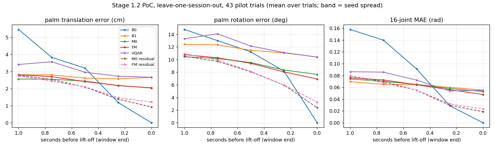
mj_forward 摆姿势并按分割掩码合成，没有物理。 [mp4 ↗]能看到的规律：绿影子在抬离前约 0.5 s 落到蓝影子上；最差那条（S01-T008）操作者先把手停在 cube 旁等了一会儿，模型以为还要移 12 cm，而方案 A 倾向「保持现状」反而对；黄点始终挤在一起，Flow Matching 没有给出第二种抓法。
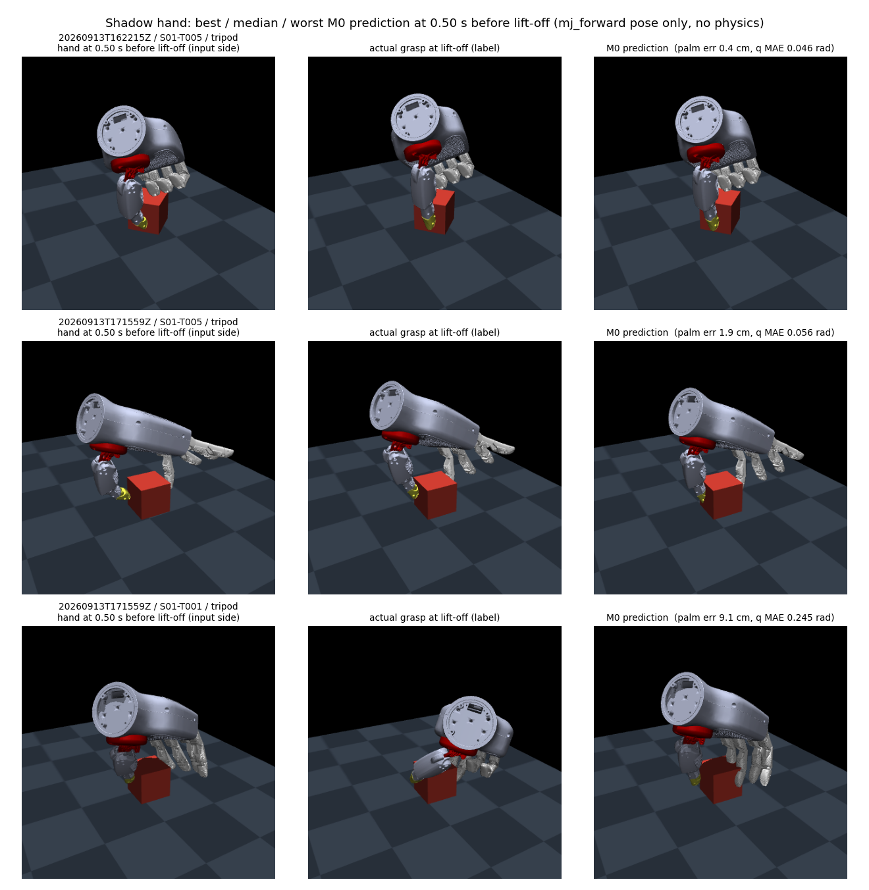
方案 B 首轮按计划只生成终点。追问「Flow Matching 能不能像 A 那样生成未来序列」后加了两个 Diffusion Policy 形式的模型，都生成未来 1 s 的 20 步 × 25 维（相对当前状态的残差，8 条样本）：FMS 用 flow matching 目标，DPS 用 DDPM ε 预测＋DDIM 采样。
| 模型 | 终点 cm（正式折 / 全部 95，τ = 1.0 · 0.5 · 0.25 · 0） | 未来 1 s 掌部 ADE cm | 8 样本互差 @1 s |
|---|---|---|---|
| M0 残差（只有终点） | 2.55/2.78 · 1.93/2.09 · 1.45/1.38 · 0.94/0.92 | — | — |
| A VQ-VAE＋AR | 2.74/3.41 · 2.55/2.95 · 2.50/2.72 · 2.51/2.67 | 3.33（一折 5.95） | — |
| FMS | 3.40/3.78 · 2.72/3.10 · 2.70/2.58 · 2.20/2.10 | 2.66 | 6.5 cm |
| DPS | 4.33/4.99 · 4.21/4.40 · 3.53/3.33 · 2.55/2.44 | 3.65 | 10.7 cm |
作为轨迹生成器 FMS 最好，且 flow matching 目标在这份数据上全面好于 DDPM 目标；作为终点预测器没有序列模型赢过残差 M0：500 维生成目标对两千个窗口太大，单条样本 6–9 cm，只有 8 条均值可看。A 的码本没有塌缩（64 码全用，perplexity 53–58）但重建误差 1.4–3.8 cm，已经和 M0 的总误差一样大。
PCA：520 维输入 21 个主成分占 90% 方差；16 个标签关节 5 个主成分占 90%，掌部位姿 3 个。线性岭回归的通道消融（抬离前 1 s）：只用手腕 9 维 2.32 cm，只用手指 16 维 5.23 cm。三个残差模型：
| 模型 | 输入 | 1.0 s | 0.5 s | 0.25 s | 0 s | 关节 rad @1 s |
|---|---|---|---|---|---|---|
| RL 线性岭回归 | 当前帧 25 维 | 2.10 / 2.26 | 2.00 / 2.06 | 1.90 / 1.87 | 1.84 / 1.79 | 0.077 |
| RW 线性，PCA-34 整窗 | 1 s 窗口 → 34 维 | 3.24 / 3.30 | 2.71 / 2.73 | 2.38 / 2.45 | 2.57 / 2.46 | 0.095 |
| ML 小 MLP | 当前帧 25 维 | 2.29 / 2.60 | 1.75 / 1.94 | 1.71 / 1.52 | 1.37 / 1.30 | 0.070 |
| M0 MLP | 1 s 窗口 520 维 | 2.55 / 2.78 | 1.93 / 2.09 | 1.45 / 1.38 | 0.94 / 0.92 | 0.079 |
远处线性最好，中段小 MLP 最好，最后 0.25 s 整窗 MLP 最好，差距都在半厘米内。手腕相对 cube 的位姿几乎是全部信息；历史窗口在这个数据量下没有帮助。Stage 1.3 要接的预测器可以只吃当前 25 维状态。
qref-abs / qref-res）物理回放证明达到姿态不能当命令后，把标签的 16 个关节换成抬离时刻的 retarget 命令 q_ref（build --label-joints ref），掌部 9 维不变，全部模型重训（7 折，seed 0，每折模型与归一化参数存为 checkpoint：results/qref-abs/models/fold_<session>.pt、qref-res/models/，留出正式 session 的推理模型 qref-heldout/heldout_formal.models.pt）。掌部误差与旧标签一致（差异 ≤ 0.1 cm），关节误差现在是命令空间的误差：
| 模型 | 掌部 cm，正式折 / 全部 95（τ = 1.0 · 0.5 · 0.25 · 0） | 关节 MAE rad @1 s | @0 s |
|---|---|---|---|
| B0 保持当前 | 4.54/5.46 · 2.98/3.20 · 1.39/1.19 · 0/0 | 0.161/0.179 | 0 |
| B1 最近示教 | 2.72/2.81 · 2.66/2.62 · 2.51/2.58 · 2.63/2.65 | 0.054/0.072 | 0.051/0.057 |
| RL 线性，当前帧 | 2.10/2.26 · 2.00/2.06 · 1.90/1.87 · 1.84/1.79 | 0.071/0.080 | 0.063/0.059 |
| ML 小 MLP，当前帧 | 2.38/2.64 · 1.85/2.07 · 1.77/1.57 · 1.25/1.21 | 0.064/0.071 | 0.036/0.034 |
| M0 绝对 | 2.41/2.58 · 2.29/2.39 · 2.11/2.15 · 2.00/2.02 | 0.070/0.077 | 0.057/0.057 |
| B Flow Matching 绝对 | 2.61/2.80 · 2.33/2.46 · 2.26/2.18 · 2.37/2.10 | 0.069/0.082 | 0.058/0.054 |
| A VQ-VAE＋AR | 2.94/3.45 · 2.28/3.04 · 2.32/2.81 · 2.48/2.93 | 0.081/0.100 | 0.049/0.061 |
| M0 残差 | 2.59/2.78 · 1.74/2.05 · 1.35/1.30 · 1.00/0.93 | 0.075/0.083 | 0.019/0.018 |
| B Flow Matching 残差 | 2.50/2.76 · 1.94/2.05 · 1.61/1.53 · 1.23/1.13 | 0.072/0.080 | 0.026/0.024 |
结论不变：远处线性、中段小 MLP、近处整窗残差 MLP，差距半厘米内；现在这些输出可以直接作为执行层的手指命令目标（回放里闭合到它保持率 96%）。
按 hand_control/plan/stage13-shared-grasp-design.md 第二步的思路做了一个无学习的物理回放（closure-replay）：会话导出的 MJCF 在 Mac MuJoCo 里以 500 Hz 跑真物理，腕部用 mocap weld 按录下的 100 Hz 腕部轨迹走（相对 cube 的位姿，cube 放在 MJCF 自己的桌面出生点），手指位置执行器 kp = 8、±2 N·m，54 mm／120 g cube。到录下的抬离时刻后，腕部脚本抬高 8 cm（1 s）再保持 1 s。两种手指命令：replay = 操作者当时的 retarget 目标；goal = 接近时同上，掌部进入标签掌姿 3 cm 内后 0.4 s 内线性闭合到标签的 16 个关节角（即 Stage 1.2 预测的那种「终点」）并保持。95 条全部跑完：
| 手指命令 | 抬离前 ≥2 指接触 | 抬起 ≥2.5 cm | 保持 1 s 且滑移 < 2 cm | 掉落 | 滑移中位 | 穿透 > 5 mm | 峰值法向力 > 40 N |
|---|---|---|---|---|---|---|---|
| replay · 录下的 retarget 目标 | 99% | 99% | 99%（94/95） | 0% | 0.3 cm | 48/95 | 37/95（最大 219 N） |
| goal · 闭合到标签关节角 | 80% | 88% | 47%（45/95） | 29% | 2.1 cm | 41/95 | 32/95 |
同晚追加的两组修复（数据集 dataset_all_qref.npz，run results/closure_qref/）：把标签的关节部分换成抬离时刻的 retarget 命令 q_ref；把腕部换成部署端的有界六维 PD（Kp 1000 N/m、Kr 80 N·m/rad、力 ≤ 60 N、扭矩 ≤ 4 N·m、整手重力与力矩补偿；阻尼放进自由关节的 dof_damping 由 implicitfast 隐式积分——显式施加时 500 Hz 下 30 步内发散）。腕部跟踪：位置 p95 13.6 mm、角度 p95 3.1°（审计参考 12.8 mm、1.1°）。
| 手指命令 | 腕部 | 抬离前 ≥2 指接触 | 抬起 | 保持 1 s 且滑移 < 2 cm | 掉落 | 从未触到 cube | 穿透 > 5 mm | 峰值力 > 40 N（最大） |
|---|---|---|---|---|---|---|---|---|
| goal · 闭合到 q_ref 标签 | weld | 99% | 98% | 96%（91/95） | 0% | 0 | 41/95 | 32/95（219 N） |
| replay · 录下的 q_ref | 有界 PD | 85% | 85% | 83%（79/95） | 2% | 13 | 1/95 | 1/95（96 N） |
| goal · 闭合到 q_ref 标签 | 有界 PD | 86% | 83% | 81%（77/95） | 2% | 11 | 2/95 | 3/95 |
三个结论：
代码：training/stage12_intent/services/level_3_experiment/closure_replay.py；结果 results/closure/closure_replay.json、closure_goal.json。仿真接触不是人体接触真值，保持 1 s 不等于承重或抗扰。
把部署 checkpoint 接到正在进行的遥操作上，20 Hz 实时预测。链路：遥操作脚本 --live-udp 把每条 retarget 命令和最近一次头显遥测复制到本机 UDP；预测器（training/stage12_intent live）把手腕换到 cube 坐标系、拼 1 s 窗口、推理；预测再经 --ghost-udp 发回遥操作脚本，挂在本来就要发的控制包上（可选 ghost 字段，旧 APK 忽略）；头显端用私有 mjData 做前向运动学、Graphics.RenderMesh 画半透明绿手和接触点小球——不建 GameObject、不进物理、不进物理记录。预测器与遥操作是两个进程，预测器崩溃不影响控制环。
| 时延项 | 之前 | 现在 |
|---|---|---|
| trial 复位后 cube 新位置到达预测器 | ≤ 0.5 s（遥测每 0.5 s 一次） | trial 号一变立即发一次遥测（同一 APK 里 Stage 1.3 会话另把周期提到 0.02 s） |
| 模型坐标系 → 头显世界的映射 | 用遥测里的 mocap 位置对在线拟合，需要开头 3–5 s 有手部移动 | 头显遥测直接发精确映射 model_frame_world_m，第一条遥测即可用；拟合残差改作核对（回放 0.2 mm） |
| 剩余 | 命令时延 20–40 ms、预测周期 50 ms、头显一阶平滑 20 ms、控制包间隔 ≤ 15 ms | |
与数采隔离。不加 --ghost-udp，控制包与记录逐字节不变。加了：--purpose formal 拒绝启动；host.jsonl 多出 kind=ghost 行，meta.json 的 provenance.ghost_display 非空，头显记录 ghost_display 事件行并在面板显示 "prediction overlay ON (demo, not training data)"；验证器把任一证据记入 label_missing，永远不给 stage11_training_ready。
验证。Quest Editor 检查套件 515 项通过（其中影子 52 项：包解析、材质序列化、前向运动学落点与 mocap 同映射一致、物理 qpos 不被触碰、耦合关节多项式、接触点映射、遥测映射复现 WorldPosition；顺带修了 9 月 13 日晚改动后过期的三项旧检查）；正式 session 回放：298 条影子报文的模型系掌部位移与 cube 系预测一致到 1e-5 m；APK 编译 0 错误。头显内人眼确认（影子确实画出、帧率无损）待做，确认方法：logcat [MjQuestGhost] overlay ready、遥测 ghost_parts_drawn>0、面板 fps 对比。
fit-final 现在把阶梯里的 FM（终点候选）和 FMS（未来 1 s 序列）一起训进部署 checkpoint（results/final_qref.models.pt，Mac CPU 3.5 分钟），预测器启动时 --model 选择、运行中按键切换：
| 键 | 模型 | 预测什么 | Mac 窗口画什么 | 每次推理 |
|---|---|---|---|---|
| 1 | m0 残差 MLP，1 s 窗口 | 终点（默认） | 绿影子 | 0.6 ms |
| 2 | ml 残差 MLP，当前帧 | 终点 | 绿影子 | — |
| 3 | rl 线性，当前帧 | 终点 | 绿影子 | — |
| 4 | fm flow matching（终点） | k=8 候选，均值作预测 | 绿影子 + 黄色候选掌心 | 2.3 ms |
| 5 | fms flow matching（未来 1 s 序列） | k=8 条轨迹，均值轨迹末端作终点 | 绿影子 + 蓝色掌心轨迹 + 黄色候选 | 3.0 ms |
显示模式（头显与窗口同步）：o 不显示、g 只显示绿影子手、c 只在 cube 上显示接触点（拇指亮绿、食指亮青）、b 两者都显示；启动用 --display。模型名和显示模式写进每条预测日志和每条影子报文，会话记录能说明操作者看到了什么。回放正式 session：FM 候选散布 1.1 cm、FMS 2.6 cm；阶梯结论不变，终点精度仍以残差 M0 最好，FM／FMS 用来展示候选与预测的接近轨迹。
# 终端 1：pilot/diagnostic 才允许影子；formal 会拒绝
sh hand_control/demo/collect_stage11_trials.sh --purpose pilot --trials 10 --live-udp 5599 --ghost-udp 5600
# 终端 2：预测器（mjpython 才有窗口）
mjpython -m training.stage12_intent live --source udp --port 5599 --ghost-udp 5600 --viewer --display both --log /tmp/live_demo.jsonl与 Stage 1.3 混合输入合成一个 demo。hand_control/demo/demo_shared_prediction.sh 在一个终端里同时跑 Stage 1.3 的共享控制采集（RL 手指残差叠加在操作者上，--purpose shared）和上面的实时预测，预测器后台启动。在遥操作终端按单键（不用回车、不回显）：a 混合输入开/关（运行中把 alpha_mode 在 off 与启动时的 const/gate 之间切换，策略照算照记录）；o/g/p/b 显示不显示 / 影子手 / cube 上的接触点 / 两者（接触点用 p，因为 c 是取消 trial）；1–5 预测器 m0/ml/rl/fm/fms；Enter/c/r/n/x 仍是 Stage 1.1 的 trial 键。共享控制下记录里的 ctrl 是混合命令，预测器读操作者自己的 ctrl_human 作输入；每次切换写 demo_control 行。
代码：HMI 仓库 training/stage12_intent/services/level_3_experiment/live.py、hand_control/demo/quest_teleop.py --ghost-udp、hand_control/demo/demo_shared_prediction.sh、quest/mj_unity/services/level_2_physics/GhostHandRuntime.cs；提交 d540a20、6598185、d1f62b2 及后续。
问题：手势（掌部位姿 + 关节命令）不遵循物体的碰撞体积——命令空间的手指被命令到 cube 内部，位置伺服靠这个过闭合产生夹持力——那么预测「物体上的点」会不会更好？分两步答，同样的 7 折留一 session、95 条。
标签 = 抬离时刻五个指尖 site 在 cube 系的位置（由达到的手势前向运动学算出）。A：预测 25 维手势再算指尖；B：直接预测 15 维指尖，残差到当前命令手势的指尖。指尖误差 cm，拇指+食指均值 / 五指均值：
| 模型 | 1.0 s | 0.5 s | 0 s |
|---|---|---|---|
| 保持当前命令指尖 | 5.06 / 4.64 | 1.61 / 1.95 | 3.10 / 1.83 |
| A 线性 → 运动学 | 1.16 / 1.73 | 1.10 / 1.53 | 1.02 / 1.45 |
| A M0 → 运动学 | 2.19 / 2.35 | 1.52 / 1.64 | 1.03 / 0.93 |
| B 直接预测指尖，线性 | 1.45 / 1.89 | 1.31 / 1.74 | 1.49 / 1.88 |
| B 直接预测指尖，线性 + 当前指尖作输入 | 1.08 / 1.56 | 1.03 / 1.44 | 1.02 / 1.36 |
| B 直接预测指尖，M0 | 1.71 / 1.93 | 1.14 / 1.31 | 1.03 / 0.95 |
配对（475 窗口）：线性下直接预测点差 3.2 mm，喂入当前指尖后追平（好 0.5 mm）；MLP 下好 3.3 mm，但两种 MLP 在 1 s 前都不如线性手势模型。表示方式不改变天花板：1 s 前 ≈1.1 cm，抬离时 ≈1.0 cm（命令 vs 实际的接触间隙）。
标签换成头显物理记录里拇指／食指与 cube 的实际接触位置（level_1_dataset/contacts.py，抬离前 0.05 s 到抬离后 0.15 s 的接触平均，cube 系；95 条 trial 拇指、食指全部有接触，中指 10 条，无名指小指从未；现已进数据集 contact_label／contact_valid）。到真实接触点的距离 cm，拇指 / 食指：
| 模型 | 1.0 s | 0.5 s | 0 s |
|---|---|---|---|
| 保持当前命令指尖 site | 4.04 / 4.87 | 2.24 / 2.22 | 3.06 / 2.38 |
| oracle：抬离时真实手势 → 运动学指尖 site | 1.52 / 1.20 | 同 | 同 |
| A 线性 → 运动学指尖 site | 2.12 / 1.81 | 2.10 / 1.73 | 1.93 / 1.73 |
| A 线性 → 指尖 → 投影到 cube 表面 | 2.08 / 1.74 | 2.03 / 1.69 | 1.89 / 1.70 |
| A M0 → 运动学指尖 site | 2.64 / 2.66 | 2.52 / 1.92 | 1.98 / 1.59 |
| B 直接预测接触点，线性 | 1.33 / 1.53 | 1.29 / 1.39 | 1.47 / 1.67 |
| B 直接预测接触点，线性 + 当前指尖作输入 | 0.92 / 1.06 | 0.93 / 1.02 | 0.95 / 1.06 |
| B 直接预测接触点，M0 | 1.65 / 1.78 | 1.20 / 1.19 | 0.98 / 1.02 |
| 同时预测手势 + 接触点（M0 双头）：接触头 | 1.83 / 1.97 | 1.37 / 1.27 | 1.10 / 1.07 |
| 常数：训练折平均接触点 | 0.92 / 1.02 | 同 | 同 |
决定。「手势作参考、接触点作目标」的结构落地：fit-final 增加接触头（线性，输入当前帧 + 当前指尖前向运动学，残差到指尖）并存训练集平均接触点先验；live 在 cube 上画拇指／食指接触点、写日志、放进影子报文（contacts，模型系），头显画成亮绿／亮青小球。今天它只是一个先验加小修正；cube 朝向随机、物体或抓法多样之后才会有信息量——这是让接触点预测成为模型所需要采的数据。仿真接触是记录命令下机器手的接触，不是人体接触真值。
dataset_all.npz／dataset_all_qref.npz 多了 contact_label（95 × 5 指 × 3，cube 系，NaN = 未接触）和 contact_valid。pinch 目标先验（cube 系，m）：拇指 (−0.026, −0.003, 0.010)、食指 (0.026, 0.000, 0.009)，各轴 std 0.007–0.009；指间距中位 5.27 cm（cube 边长 5.4 cm 减穿透）。training/artifacts/stage12_intent/results/final_qref.models.pt：M0／ML／RL／FM／FMS + 接触头 + 先验；load_final 返回 FinalModels（available、contacts(x_last, tips_now)、contact_prior）。model_frame_world_m（精确模型→世界映射）、trial 切换即时遥测；Stage 1.3 会话同一 APK 里加了 50 Hz 遥测、tip_contacts、palm_pose。ghost 行或 purpose=shared）永不进入 Stage 1.2 训练集。脚本与数字：training/stage12_intent/services/level_3_experiment/tips_ablation.py、contacts_ablation.py，结果 results/tips_ablation/、results/contacts_ablation/；计划文档 training/plan/stage12_intent_poc.md；提交 79723aa、8a0e10c。
问题有两个：Quest 手势识别本身能否给出置信度并把低置信度的过滤掉；模型的手势／接触点预测能否输出置信度，作为共享控制的仲裁系数。两个都做了，分别在数据链路的两端。
Quest 应用早已在每条 landmark 报文头里发两个置信度：整手 c（Meta 的 IsHighConfidence，0／1）和逐指 fc（五个比特，bit 0 = 拇指）。整手那个一直在用：整手低置信度的帧不产生命令（头显 0.35 s 后判定命令丢失、保持姿态），记录里 source 行的 tracked／confidence 就是它。逐指比特此前解析了但没有消费——手指被手掌或物体挡住时 Meta 会把那根手指标低，而整手仍算跟踪，此时 retarget 用的是追踪器猜出来的关节。现在逐指判定进帧（LandmarkFrame.finger_confidence）和记录（source 行 finger_confidence，command 行 finger_hold）；quest_teleop.py --finger-confidence hold 让低置信度的手指保持它最后一次高置信度的命令，其余手指照常。默认只记录不保持（还没有任何一场记录有这些比特；捏合闭合时被 cube 挡住的拇指／食指若被保持，会停在接触前的命令上），先看会话结束行的 finger low-confidence frames N/M，再用 MJQUEST_FINGER_CONFIDENCE=hold 打开。头显端无需改动。
先在今天的合并 demo 记录上诚实地量（残差 M0，一位操作者，6 条 trial，抬起前 1337 次预测，没有一条在训练集里；真值取该 trial 第一条 Transport 采样时的状态）：
| 距抬起 | n | 手掌误差中位数 | 模型预计剩余位移中位数 |
|---|---|---|---|
| < 0.25 s | 24 | 2.9 cm | 2.8 cm |
| 0.25–0.5 s | 26 | 3.2 cm | 3.3 cm |
| 0.5–1 s | 57 | 4.6 cm | 4.6 cm |
| 1–2 s | 108 | 7.7 cm | 8.0 cm |
| 2–5 s | 268 | 8.7 cm | 9.1 cm |
| > 5 s | 854 | 16.3 cm | 17.0 cm |
误差几乎就等于模型自己预计还要走的位移（Spearman 0.62，抬起前 2 s 内 0.82）——残差模型离目标越远越向当前姿态回归。剩下"自信却错"的一类（剩余 ≤ 5 cm 但错 > 10 cm，46／1337）全是手快速（14 cm/s）背离 cube、手指在动、离真正抓取还有 ~20 s 时做出的预测。于是预期误差 = 剩余位移 + 0.3 s × 手掌速度（手还得走完剩余位移，且按当前速度至少再走一个反应时间），置信度 = 0.5预期误差／6 cm（固定参考，不随显示门限变——它还要当仲裁系数，改显示不能改 α），显示门限默认 6 cm，±1 cm 滞回加 0.2 s 驻留防止 20 Hz 闪烁。今天记录上的门控效果：
| 门控 | 保留 | 保留部分误差中位数 | p90 | "自信却错"保留 | 好预测（≤ 5 cm）保留 |
|---|---|---|---|---|---|
| 仅剩余 ≤ 5 cm | 14 % | 3.7 cm | 15.8 cm | 46/46 | 114/114 |
| 预期误差 ≤ 5 cm | 6 % | 2.9 cm | 11.0 cm | 8/46 | 59/114 |
| 预期误差 ≤ 6 cm（默认） | 9 % | 3.2 cm | 14.5 cm | 14/46 | 88/114 |
| 预期误差 ≤ 8 cm | 15 % | 4.1 cm | 15.2 cm | 26/46 | 109/114 |
试过并放弃的信号：flow matching 采样离散度（各时距都是 0.5–0.7 cm，见阶梯表）；5 个随机种子的残差 M0 集成（错与对的离散度 2.1 vs 1.9 cm，Spearman 0.42，只跟时距走、找不出错的）；输入 z 分数（AUC 0.71，记录在 zmax 但不门控）；预测在标签空间的 z 分数（把整场都标掉——今天的抓取在手掌位置上离训练标签分布 4–6 σ，这也是抬起时误差 3 cm 而留一 session 只有 0.9 cm 的原因：数据缺口，过滤器补不了）。这些是一位操作者一场记录上的观察，不是校准过的保证。
接进链路。预测器每条日志与每条影子报文带 confidence、err_hat_m、gated；被门控的预测照样算、照样发，遥操作脚本把它从控制包里去掉（头显立即隐藏，面板不再显示 overlay ON）并以 attached=false 记成 ghost 行。按键：f 过滤开关，[ ] 门限 ∓1 cm（--no-filter、--threshold-cm）。置信度也随控制包进头显（ghost.confidence，头显端按它淡化影子并显示在面板——C# 已写好并加了检查，但今天 demo 一直在跑，未编译、未安装；现装 APK 会忽略这个字段，过滤完全在主机端生效）。
仲裁系数。quest_teleop.py --alpha-from-confidence：最新预测的置信度（0.5 s 内无报文则不缩放）作为 trust 传给 Stage 1.3 控制器，它在部署包络之后再乘到 α 上——预测再自信也打不开关着的包络；每条命令记 prediction_confidence，shared 块记 trust。合并 demo 默认开（MJQUEST_ALPHA_FROM_CONFIDENCE=0 关）。
代码：training/stage12_intent/services/level_3_experiment/live.py（Confidence）、hand_control/services/level_3_teleop_runtime/l20_sources.py（逐指比特）、hand_control/demo/quest_teleop.py（hold_low_confidence_fingers、--alpha-from-confidence）；分析脚本在会话草稿区，数字见 README 的 Confidence gate 一节；测试 test_stage12_intent.py::test_confidence_gate_expected_error_hysteresis_and_keys、test_quest_teleop_demo_keys.py、test_quest_workspace.py。
四个问题：接触点和手势用一个网络还是两个；要不要强制两者一致；置信度让模型输出行不行；要不要贝叶斯网络。同一套 7 折留一 session、400 epochs、在 4090 上训练（MuJoCo 的 DLL 被 Windows 应用控制策略拦住，输入帧的指尖运动学在 Mac 上预算好随数据一起发过去，打分回 Mac 做）。手掌误差 / 接触点误差 / 与手势正向运动学的一致性差，cm：
| 模型 | 1.00 s | 0.50 s | 0.00 s |
|---|---|---|---|
| sep：两个独立 M0（此前部署） | 2.78 / 1.62 / 3.06 | 2.05 / 1.17 / 2.80 | 0.93 / 1.01 / 3.05 |
| derived：只预测手势，接触点 = 正向运动学指尖投到表面（强制一致） | 2.78 / 3.32 / 0 | 2.05 / 2.88 / 0 | 0.93 / 3.19 / 0 |
| joint：共享编码器，一个头出 25 + 6 | 2.65 / 1.83 / 3.10 | 1.92 / 1.29 / 2.86 | 0.87 / 1.10 / 2.97 |
| nll：joint + 方差头（高斯负对数似然） | 2.36 / 1.82 / 3.14 | 1.69 / 1.19 / 3.01 | 0.81 / 1.05 / 2.98 |
| je：nll 的 5 种子集成取均值 | 2.31 / 1.64 / 3.01 | 1.70 / 1.12 / 2.86 | 0.79 / 1.00 / 3.05 |
置信度（所有时距合并；只保留最有把握的 25 / 50 / 75 % 预测时手掌误差中位 / p90，cm）：
| 信号 | Spearman | 保留 25 % | 保留 50 % | 保留 75 % | 全部 |
|---|---|---|---|---|---|
| nll 预测的 σ | 0.17 | 1.11 / 2.58 | 1.14 / 2.69 | 1.19 / 2.83 | 1.27 / 3.01 |
| ens5 种子分歧 | 0.44 | 0.87 / 1.94 | 0.97 / 2.21 | 1.08 / 2.56 | 1.24 / 2.93 |
| 线上启发式（剩余位移 + 0.3 s × 速度） | 0.51 | 0.99 / 1.97 | 1.16 / 2.41 | 1.33 / 2.78 | 1.60 / 3.68 |
结论。（1）一个网络比两个好，它的 5 种子集成是目前最好的终点预测器（1 s 处少 0.5 cm，抬起时少 0.14 cm），已部署为 je（键 6：均值手势、自带接触点头、种子分歧记进日志）。（2）强制一致要付 2 cm 接触点误差：运动学指尖点和真实接触点系统性差 ~3 cm，所以 RL 的目标继续用直接预测的接触点，手势只作参考。（3）方差头在 95 条数据上严重过于自信（2σ 覆盖率 0.03），线上置信度仍用启发式，种子分歧可作第二信号；不需要贝叶斯网络——主要不确定性是"离抓取还远、意图未定"这种数据固有噪声，不是"没见过这种输入"。（4）接触点抬起时仍 ≈ 训练均值先验（1.0 cm）：95 条全是同一方向 pinch，只有采其他方向的数据能改变这一点。
代码：training/stage12_intent/services/level_3_experiment/joint_confidence.py、run_joint_4090.ps1；部署 checkpoint results/final_qref.models.pt（joint 项），上一版留作 final_qref_pre_je.models.pt。
版本 v5 · 2026-09-23 · 合成抓取／接近轨迹生成管线（备忘 hand_control/plan/2026-09-23-grasp-synthesis-intent-feasibility.md）
链路：抓姿库（grasp_bank.py）在 6 种基元（4／5.4／7 cm cube、圆柱、球、长条）上解析采样接触点，掌姿从真人 95 条的「捏合坐标系」分布做种子，阻尼最小二乘 IK 解掌姿 + 16 关节，得 cage（指尖离面 2.5 cm）／grasp（落面）／squeeze（指令开度 1.0 ± 0.3 cm）三段，全部过 objects4 物理验证（合拢 → 加力 → 抬 8 cm → 保持 → ±4 cm 晃动）：373 个通过，Mac CPU 144 s；圆柱／球的 tripod IK 全失败。接近生成器（synthetic_approach.py）：随机偏航 + Boltzmann 选面、最小 jerk 运输 + 0.6–1.1 s 慢速逼近、笼在运输 40–70 % 处到达、抬离前 0.7–1.05 s 开始合拢，犹豫／迟滞／噪声等缺陷随机化；2238 条，曲线级别对上真人（掌心距离 1 s 前 4.7 对 6.0 cm，0.5 s 前 3.2 对 3.1）。Dexonomy：写了 L20 资产与 pinch／tripod 模板，Mac CPU cube 9/9，4090 GPU 上 20 个 DGN 真实网格 127 s 出 329 个通过其自带 eval 的 pinch（floating 场景腕部朝向任意，不像人）。
| 实验 | 1.0 s | 0.5 s | 0 s | 读法 |
|---|---|---|---|---|
| 合成 held-out 偏航（+ held-out 抓姿行） | 1.19 | 0.67 | 0.53 | 物体 one-hot + 尺寸 + 物体坐标系的接口足以让一个网络覆盖多物体 |
| 合成 held-out 尺寸（未见过的 7 cm cube） | 0.95 | 0.64 | 0.64 | 同上 |
| 零样本 → 95 条真人（保持基线 4.56 / 3.48 / 0.97） | 3.89 | 3.26 | 1.26 | 旋转 10–15°、关节 0.15 rad 的差距在姿态分布，不在接近曲线 |
| 真人 LOSO：只真人 / 合成预训练+微调 / 同配方随机初始化 | 2.35 / 2.64 / 2.63 | 1.76 / 1.85 / 1.84 | 0.78 / 1.02 / 1.17 | 预训练 − 对照 ≈ 0（CI 全含 0）；差的那 0.1–0.5 cm 是微调配方的代价 |
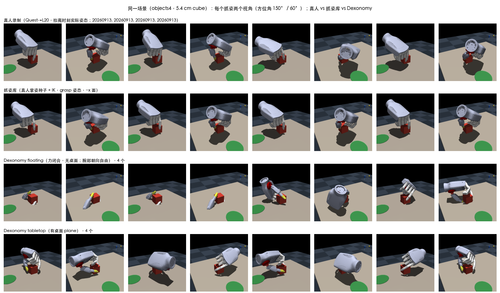
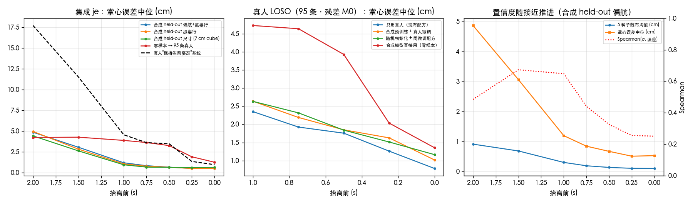
代码：training/stage12_intent/services/level_1_dataset/{grasp_bank,synthetic_approach}.py、level_3_experiment/synthetic_train.py（CLI synth-bank / synth-approach / synth-train）；产物 training/artifacts/stage12_intent/synthetic/；Dexonomy 资产 Dex_Hand/grasping/assets/dexonomy_l20/。
版本 v6 · 2026-09-30 · v5 合成数据的独立评估（备忘 hand_control/plan/2026-09-30-synthetic-data-sufficiency-quality.md；脚本与图 training/artifacts/stage12_intent/synthetic/eval_20260930/）
| 训练数据 | 真人零样本 | 合成留出行 |
|---|---|---|
| 合成 210 条 | 4.96 / 4.43 / 2.64 | 2.34 / 1.43 / 0.96 |
| 合成 1678 条（09-23 数据集扣除留出行） | 4.52 / 3.99 / 1.78 | 1.67 / 1.11 / 0.93 |
| 合成 6724 条（每抓姿 24 条） | 4.25 / 3.35 / 1.90 | 1.24 / 0.92 / 0.86 |
| 保持当前姿态 | 4.56 / 3.48 / 0.97 | 5.96 / 3.08 / 1.14 |
| 真人 10 / 40 / 全部（留一会话） | 3.15 / 2.31 / 1.51 · 2.38 / 1.87 / 0.93 · 2.31 / 1.65 / 0.86 | — |
标签为什么不像真人。16 个关节里 9 个（中指、无名指、小指）在所有 pinch 标签中是同一个常数（IK 只驱动任务指尖，其余关节被先验拉回均值）；任务关节相对真人偏 0.7–2.2 个标准差；匹配条件的 40 个合成标签没有一个落在真人标签的 95 % 范围内（拇指 4 + 食指 2 关节的马氏椭球）；真人指令有 33 % 的标签项贴在关节限位上（retarget 截断），合成 8 %；真人拇指有两种构型（81 / 14 条），合成一种。掌心位置本身在范围内（偏 1 cm）。物理上库是好的：373 个抓姿复验 373 个通过，5.4 cm cube 的 pinch 加掌姿扰动后与真人标签同样稳健（3 mm/3° 下 87 % 对 86 %）。
接近轨迹为什么不像真人。掌心距离曲线对上了，背后的运动不一样：把「绕拇指–食指接触中点的刚体转动」从真人轨迹里扣掉，抬离前 0.5 s 的掌心距离从 3.15 cm 变成 0.87 cm——真人在抬离前约 0.5 s 指尖已到位，之后手掌绕指尖转约 11°、先比最终高度低 1.9 cm 再抬上来，同时合指；合成是姿态早已转完（0.5 s 前还差 0.0° 对真人 10.9°）、掌心从上方直线下降。反事实：按 pilot 会话的统计量把这段转动注入合成轨迹，轮廓对上了，formal 52 条零样本没有改善（3.78 对原 3.93 cm，基线 4.08，43 条 pilot 真人 2.19）——把一个边缘分布调对，不等于把「窗口 → 终点」的条件关系调对。
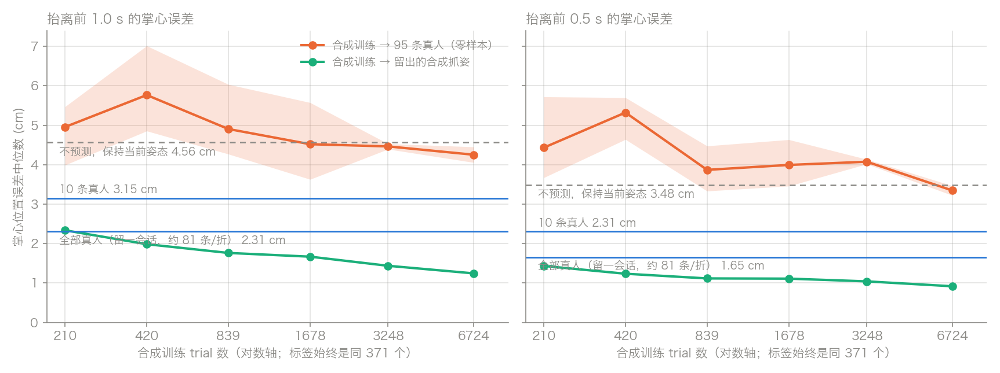
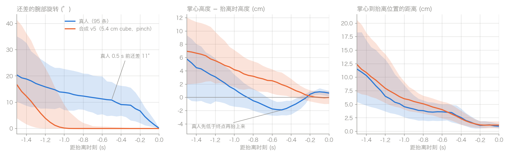
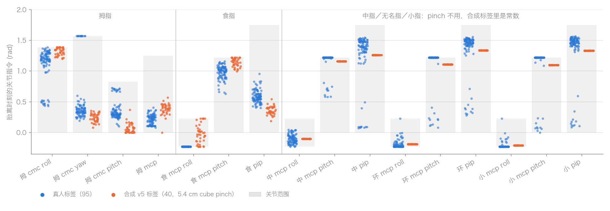
验收线（给任何后续合成方案）。在没参与校准的真人会话上，零样本掌心误差每个时刻低于保持基线，且不高于 10 条真人的水平（3.15 / 2.31 / 1.51 cm）；≥ 5 个种子；预训练比较带同配方随机初始化对照；不能用合成验证集代替。
版本 v7 · 2026-09-30 晚 · 移植式生成器 v3 + 筛选 + 预测器五臂（计划与执行记录 hand_control/plan/2026-09-30-synthetic-pretrain-rl-plan.md §6.2–6.4；结果 training/artifacts/stage12_intent/synthetic/v3/results/results.md）
生成器 v3（synthetic_transplant.py）：4476 次尝试 → 3489 条通过 IK + 名义物理（78 %；pinch 直接落座 2428 条，tripod 与落座失败者走 IK 1061 条）。真人抬离指令原样移植到别的物体上大多能持住：cube040 97 %、cube054 98 %、cube070 90 %、圆柱 90 %、球 87 %、长条 99 %。每条 trial 记来源会话，折内不用来自留出会话的合成。检查：抬离前还差的腕部旋转（1 / 0.5 / 0.25 s）p10/50/90 = 7.0/14.2/25.5、5.4/9.8/15.9、2.4/6.8/11.3° 对真人 8.6/13.3/22.6、4.9/11.1/19.8、2.9/8.8/16.0°；cube054 pinch 标签落在真人 95 % 椭球内 0.89（v5 是 0.00）；同一批会话内真人 vs 移植版的分类 AUC 0.49（几乎不可分），跨会话 0.93 主要是会话差异。筛选（synthetic_filter.py）：物理（加扰动仍持住 ≥ 1/2 且滑移 ≤ 1.5 cm）0.83、运动学（合拢前路径不穿物 > 5 mm、不穿桌 > 3 mm）0.73、两者 0.61；真实性分类器只作训练权重（p/(1−p) 裁到 0.2–5），折内 AUC 0.50–0.68。
| 臂 | 1.0 s | 0.5 s | 0 s | 配对差 1.0 / 0.5 / 0 s [95 % CI] |
|---|---|---|---|---|
| 保持当前姿态 | 4.56 | 3.48 | 0.97 | |
| 只真人 | 2.43 | 1.85 | 0.86 | — |
| 只合成，v2 参数化（v5 的数据） | 4.35 | 3.52 | 1.89 | +2.70 [+2.14, +3.36] / +2.23 / +1.68 |
| 只合成，v3 移植 | 2.60 | 1.92 | 0.97 | +0.28 [+0.11, +0.47] / +0.16 / +0.16 |
| 只合成，v3 筛后加权（v3f） | 2.40 | 1.90 | 0.92 | +0.10 [−0.11, +0.30] / +0.05 [−0.09, +0.19] / +0.07 [−0.01, +0.16] |
| 预训练 v3f → 微调 | 2.47 | 1.75 | 0.87 | +0.14 [+0.01, +0.29] / −0.00 / −0.01 |
| 同配方随机初始化（对照） | 2.61 | 1.77 | 0.97 | +0.35 [+0.18, +0.53] / −0.04 / +0.11 |
| 混合训练，真人 + v3 | 2.37 | 1.79 | 0.90 | +0.12 [−0.03, +0.27] / −0.07 [−0.16, +0.02] / +0.06 |
| 混合训练，真人 + v3f | 2.44 | 1.72 | 0.87 | +0.13 [−0.02, +0.27] / −0.02 / +0.01 |
预训练 − 同配方随机初始化：v3f −0.21 [−0.38, −0.04] cm（1 s）、−0.12 [−0.19, −0.06]（抬离）——预训练第一次有可测的贡献；但相对只真人没有增益（最好的臂 ±0.1 cm，CI 含 0）。多物体真人测试（10 条 v2-objects 采集的 trial，离线推导、未复核，物体系改为 yaw-only／世界对齐）：只真人模型在别的物体上崩到 7.8 / 6.3 / 4.3 cm（保持基线 4.6 / 3.5 / 0.6），含合成的臂回到基线附近（预训练 v3f 4.6 / 3.7 / 2.0），但没有一个在 1 s 前明显好于基线，抬离时刻都差 1.5–2 cm，球上系统偏 2–4 cm——覆盖有、精度未验证，要等正式多物体采集。
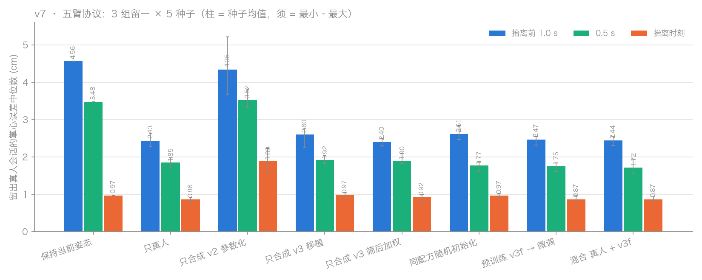
RL 一侧用同一批合成轨迹的结果见 Stage 1.3 结果 v6。
部署物。training/artifacts/stage12_intent/results/final_syn_v3f.models.pt（synthetic_final.py，Mac CPU 约 5.5 min）：上表「混合训练，真人 + v3f」的配方，在全部 95 条真人 + 筛后加权的移植合成 2126 条上训；33 通道 = 原 26 + 物体 one-hot 4 + 尺寸 ×10 3（后 7 个不归一化）；格式与 fit-final 相同（m0／ml／rl／接触点头／je 5 种子，无 fm、fms）。默认在线模型没有换，仍是只真人的 results/final_qref.models.pt；新模型靠环境变量切：MJQUEST_CHECKPOINT=…/final_syn_v3f.models.pt MJQUEST_MODEL=je sh hand_control/demo/demo_shared_prediction.sh --objects cube,cylinder,sphere,bar --cube-yaw 180（MJQUEST_ALPHA_MODE=off = 只显示影子手、不介入）。
接线。heldout.load_final 按归一化器的通道数建网（26 或 33）；live.py 在 33 通道时从头显回执的 task_object／task_object_size 拼 7 个物体通道（回执没给时按 5.4 cm cube），物体系改为 yaw-only（cube、长条）或世界对齐（球、圆柱），接触点只在 cube 上做表面吸附；26 通道 checkpoint 行为不变。测试 56 通过 2 跳过。
离线回放自测（无头显）。4 个 v2-objects 录像 + 3 个 09-14 cube 演示录像都能出预测（m0 3 ms、je 4 ms／次）。cube 直立、手在 30 cm 内的接近段，新 je 与现用 je 的预测掌心差中位 3.6 cm（p90 8.7）；参照：现用 m0 与现用 je 之间是 3.2 cm（p90 5.9）；新 m0 与现用 m0 差 7.0 cm，所以在线用 je。方块被碰倒时两者差 25–30 cm：现用模型的物体系跟着方块翻，新路径保持 z 向上——是坐标系约定的差别，不是预测误差。录像里头显回执只有约 1–2 Hz，相位标志滞后，用「进入 Transport 的第一帧」当真值不可靠，所以不给回放精度。
真人在环一次（session 20261004T173900Z，新 je，四种物体带偏航，α 关 = 只显示）。只完成 2 条 cube pinch；第 3 条（圆柱）手停在离物体 39 cm 处约 6 min 没有接近，会话结束——非 cube 物体零数据。两条的 cube 都转了约 180°：抬离掌位在物体系里离最近的真人标签 20–22 cm／约 150°，离最近的筛后合成标签 2.5–3.4 cm／6–9°，也就是手落在真人数据从没见过、只有合成数据覆盖的那一侧。真值 = 在线日志里进入 Transport 第一行的掌位（在线相位 20 Hz 更新，可用）；现用模型没有在环跑，是把同一场录像离线回放过它、对同一个真值打分（物体静止时两条路径的物体系一致，差 ≤ 0.9 cm；最后 0.25 s 物体已动、回放的物体位姿滞后，不比）。
| 1–2 s | 0.5–1 s | 0.25–0.5 s | < 0.25 s | |
|---|---|---|---|---|
| 保持当前姿态 | 3.2／3.0 | 3.6／2.8 | 3.3／2.3 | 1.1／0.9 |
| 新 je（真人 + 合成，33 通道，在环） | 6.0／4.5 | 5.1／4.1 | 3.6／3.3 | 1.8／1.7 |
| 现用 je（只真人，26 通道，同场回放） | 20.4／17.5 | 19.6／17.1 | 17.6／16.4 | — |
| 现用 m0（只真人，26 通道，同场回放） | 14.8／16.1 | 13.8／13.9 | 12.9／13.1 | — |
读法：在 cube 转过去的那一面上，只真人模型的预测偏 13–20 cm（它没见过这一侧），加了合成数据的模型降到 3–6 cm——这是合成数据买到的覆盖；但新模型在这两条上每一段都没有好于保持当前姿态（多 0.3–2.8 cm），与上面多物体离线测试「回到基线附近、不优于基线」是同一个结论。n = 2、单操作者、只有 cube，这不是精度测量；原因（操作者在抬离前已经悬停在 3 cm 内、还是这一侧的合成标签有偏）没有查。未偏航 cube 上新旧模型的在环对比、圆柱／球／长条上的任何在环数据，都还没有。
这张表的数字不能和 v8 的并排读。本节的真值是在线日志里进入 Transport 的第一行掌位；v8 用的是数据集标签（与 95 条真人同一定义）。在这两条 trial 上两者差 5.6／3.9 cm——数据集的「抬离」那一帧方块已经被提起 5.8／4.5 cm（cube_world z 154.4 → 160.2／158.7 cm），而在线路径的物体位姿没跟上（同一时刻数据集里 H 与 P 只差 0.4／0.8 cm）。两套口径各自自洽，混比会凭空多出几厘米。
记录：human_machine_interaction · hand_control/plan/2026-09-30-synthetic-pretrain-rl-plan.md §6.7；在线日志与打分脚本 training/artifacts/stage12_intent/synthetic/v3/live_20261004/。
版本 v8 · 2026-10-04 · 生成式抓取模型产数据、完全替代真人数据（计划与执行记录 human_machine_interaction · hand_control/plan/2026-10-04-generative-grasp-human-free.md §6；结果在 HMI 仓库 training/artifacts/stage12_intent/ 下的 synthetic/gen/results/ 与 results_poseonly/）
这是 Stage 1.2 第一次真正用生成器的产物进训练集：v5 的抓姿库是借 BODex／Dexonomy 思路自建的（解析采样接触点 + IK + MuJoCo 验证，掌姿种子与关节先验取自真人），Dexonomy 当时只在 L20 上冒烟过、抓姿没进任何训练集。
管线（berlin 一张 H200，tmux 内固定 CUDA_VISIBLE_DEVICES）：① 模板：L20 上的 24_Tip_Pinch／14_Tripod 按 GRASP 分类定义在手的运动学上最小二乘求解（拇指指垫对食指指垫，非任务手指取 Dexonomy Shadow 同名标注按关节量程比例映射），不读任何录制；Dexonomy 先把模板刚性贴到物体表面再闭合，所以每类按开口各出一个（pinch 3／4.5／6／7.5 cm，tripod 3／4.5／6 cm）。② 生产：Dexonomy 在 136 个桌面原型（130 个随机尺寸训练物体 + collection-v2 的 6 个留出物体）上 57,120 个候选 → 19,764 个抓取 → 19,568 个通过它自己的 MuJoCo 评测，约 20 min。③ 生成模型：DexLearn 条件归一化流（Möbius 流出旋转与平移，MLP 出 pregrasp／grasp 两段位姿与三段关节；PointNet 主干——MinkowskiEngine 在没有 nvcc 的 berlin 上编不了），在 130 个训练物体上 6000 步 × batch 1024，约 27 min；对 6 个留出物体的局部点云采样 49,152 个。④ 复验：每个生成样本回到 objects4 场景（kp 8、摩擦 1.2）合拢、加力、抬 8 cm、±4 cm 摇晃，3 mm／3° 扰动 2 次至少 1 次持住、滑移 ≤ 1.5 cm，外加两条显式的操作者侧规则（前臂不低于水平 10°、手腕高出桌面 3 cm）。DexLearn 样本通过率 34 %（每格随机 1500 个：方块 pinch 48–58 %、球 77 %、长条 12 %，主要淘汰原因是手指穿入物体 > 4 mm），抓姿库每格 60 个封顶。⑤ 接近：v5 的参数化生成器（起点、舒适腕姿、手指初态、时序是真人统计）或无真人先验生成器（操作者在 −x 侧、右肩位置取坐姿人体测量常识；最小 jerk 运输 + 减速逼近；最大张口在 60–80 % 运动时间；选面 = 前臂指向肩 + 前臂旋转窗口）。⑥ 预测器：v7 协议，残差 M0，5 种子；不见真人的臂训练一次、在全部真人上零样本测，GPU 上每个模型约 15 s。
| 臂 | 训练数据里的真人成分 | 全输入 | 只用掌姿（诊断） |
|---|---|---|---|
| 保持当前姿态 | — | 4.56 / 3.48 / 0.97 | 同左 |
| 只真人（3 组留一） | 真人 trial | 2.41 / 1.85 / 0.91 | 2.55 / 1.92 / 0.97 |
| 现在 demo 用的模型的配方：真人 + v3f 混合（v7 09-30 同协议的混合臂；部署的 checkpoint 是同配方在全部 95 条上重训，本身没有留出数字） | 真人 trial + 真人运动 | 2.44 / 1.72 / 0.87 | — |
| 只合成 v3f（移植真人运动） | 其它会话的真人运动 | 2.39 / 1.89 / 0.91 | 2.51 / 1.93 / 0.90 |
| IK 抓姿库 + 真人标定接近（v5 的数据） | 终点种子、接近统计 | 4.75 / 3.74 / 1.88 | 3.15 / 2.95 / 1.26 |
| IK 抓姿库 + 无真人先验接近 | 终点种子 | 5.44 / 4.20 / 1.40 | 3.28 / 3.03 / 1.14 |
| Dexonomy + 真人标定接近 | 接近统计 | 12.77 / 10.98 / 10.70 | 3.67 / 3.09 / 1.50 |
| Dexonomy + 无真人先验接近 | 无 | 12.63 / 10.55 / 10.24 | 4.06 / 3.14 / 1.77 |
| DexLearn + 真人标定接近 | 接近统计 | 16.71 / 14.66 / 13.05 | 3.97 / 3.32 / 1.90 |
| DexLearn + 无真人先验接近 | 无 | 12.08 / 10.89 / 8.95 | 4.27 / 3.25 / 1.26 |
| Dexonomy 覆盖式模板 + 真人标定接近 | 接近统计 | 12.86 / 11.10 / 10.76 | 6.15 / 5.10 / 3.03 |
| Dexonomy 覆盖式模板 + 无真人先验接近 | 无 | 5.73 / 4.14 / 2.85 | 5.03 / 3.97 / 2.20 |
| 真人 + DexLearn 零真人数据，混合训练 | 真人 trial | 2.58 / 1.88 / 1.00 | — |
| DexLearn 零真人数据预训练 → 真人微调（同配方随机初始化 2.60 / 1.74 / 1.07） | 真人 trial | 2.65 / 2.11 / 1.17 | — |
为什么失败：掌姿对、关节构型不对。生成库的掌姿与真人一致（cube054 pinch：掌心到物体 19.8 cm 对真人 19.7、前臂朝上分量 0.47 对 0.50、前臂旋转中位 −88° 对 −93°），但抬离时拇指 cmc_yaw 偏 −12.6σ、cmc_roll +6.7σ，无名指／小指 roll 偏 −11…−15σ（模板定下的非任务手指几乎没有方差——与 v6 在 IK 合成数据上发现的「九个标签关节恒定」是同一个缺陷）。真人抓取时机械手实际停住的构型在 L20 上是可行对捏，只是不是教科书式的：指垫法向偏离对向中位 28°（规范模板 6°），拇指 roll／yaw 1.00／0.61；输入里的拇指指令（主簇 roll ≈ 1.2、yaw ≈ 0.36）又在此之上多捏了一截（见下方补记；此前把这组指令写成「对向角约 49° 的可行对捏」，混用了指令与实际构型）。而「严格指垫对向」的模板求解只有一个解（0.64、1.05），Dexonomy 从这一个模板长出来的全部抓取、以及 DexLearn 学到的分布（比 Dexonomy 自己还窄）都落在那一点。去掉关节通道后（只用掌姿），零真人的两臂在 1 s 前比保持好 0.96 [−1.31, −0.64] 和 0.80 [−1.08, −0.54] cm，0.5 s 打平或略好，抬离差 0.3–0.8 cm——掌姿与接近部分能迁移，但精度不够。
归因。① 终点来源（同一接近生成器、只用掌姿）：人类种子的 IK 终点比 Dexonomy 终点好 0.61 [+0.29, +0.96]（真人标定接近）／0.69 [+0.42, +0.94] cm（无真人先验接近），1 s。② DexLearn 对 Dexonomy 直出没有增益：全输入 +0.24 [−0.45, +0.93] cm，只用掌姿 +0.16 cm（1 s）——学到的生成模型复现了训练数据的单一姿态模式，并多出 51 % 的穿入样本要筛。③ 覆盖式模板（零真人的修正，见计划页 v8）：在 L20 可行姿态空间里用最远点采样取 4 种拇指构型 × 2 组随机非任务手指，挑选只看可行性；它的 141 个 pinch 里 47 个落进真人拇指主簇（规范模板 0 个）。全输入比规范模板好 5.56 [−6.51, −4.58] cm，与「IK 真人种子库 + 同一零真人接近」打平（−0.14 [−0.62, +0.33]）；但库小（176 个，方块上少）、只用掌姿时反而差 0.96 [+0.76, +1.18] cm。④ 真人标定的接近先验在 IK 库上值 0.5–0.8 cm；与生成库组合时反而更差（v5 生成器按真人舒适腕姿选面、手指初态取真人均值，在生成库里挑出的组合落在关节分布外）。⑤ 与真人混合／预训练：混合 +0.22 [+0.09, +0.36] cm，预训练比同配方对照差 0.24 [+0.03, +0.45] cm——没有增益。
是不是随机化不足？（2026-10-05 补记，只做分析、没有新训练）关节这一块是，而且随机化能修：关节通道带来的额外误差（全输入减只用掌姿，1 s）规范模板 8.6 cm、DexLearn 7.8 cm、覆盖式模板 0.7 cm；抬离时拇指 roll／yaw 的标准差规范 0.07／0.05、覆盖式 0.19／0.30、真人 0.27／0.44 rad，真人拇指落在某个生成抓取 0.1 rad 内的比例由 0 % 升到 65 %。规范版没覆盖到有三层原因。① 模板驱动：Dexonomy 只在物体、接触位置和手位姿上多样，手指构型由模板定死；真人实际停住的构型 100 % 落在覆盖式模板的锥内（对向 ≤ 60°、朝向 ≤ 57°），0 % 落在严格对向附近。② 输入是操作者的指令，不是机械手的构型：VR 没有触觉，人手穿过虚拟方块继续合，5.4 cm 方块上真人指令的指垫间距只有 2.2 cm、对向偏离转到 54°；Dexonomy 的加力指令沿指垫法向推，同样捏过头（3.2 cm）却保持对向（32°）——差别在方向而不在深度。IK 库的指令像真人（2.0 cm、61°），是因为它的加力偏置抄自录像。覆盖式的非任务手指 roll 以 0 为中心随机，真人无名指／小指稳定在 −0.19。③ 时间维度（由平均轨迹推断，未做反事实）：生成器里手指与手掌同步合拢（规范数据抬离前 2 s 到抬离，拇指 yaw 0.46 → 1.02、食指 0.33 → 0.95），手指构型成了「掌还剩多远」的进度钟；真人拇指 yaw 全程约 0.55，开始就半屈（拇指 roll 0.91、中指 0.97），合拢主要是最后 1 s 的食指屈曲和拇指 roll。真人抬离帧因此像合成数据的抬离前 1.5–2 s（掌还在 11–15 cm 外），与规范模型在抬离时刻 10.2 cm 的误差对得上；覆盖式配 v5 接近仍崩（12.9 cm）可用中指同样解释（合成 0.92 → 0.55 张开，真人 0.97 → 1.16 合拢）。覆盖式只随机了终点；要稳，还得让手指与进度脱钩，或直接不给关节通道。但随机化补不到真人水平。真人数据上 16 个关节通道本来只值 0.14／0.07／0.06 cm（只真人臂全输入 2.41／1.85／0.91，只用掌姿 2.55／1.92／0.97），关节随机化做到完美，Dexonomy 也只到约 3.9／3.1／1.7 cm，不过验收线。剩下的差距在掌姿与接近运动，往下每一步都要加真人信息（只用掌姿，1 s）：Dexonomy + 零真人接近 4.06 → 换真人统计标定的接近 3.67 → 真人种子 IK 终点 + 零真人接近 3.28 → 再换标定接近 3.15 → 移植真人运动 v3f 2.51（只真人 2.55）。随机化能把分布撑宽，却不能把概率质量挪到人真正抓的位置和真正的减速方式上。
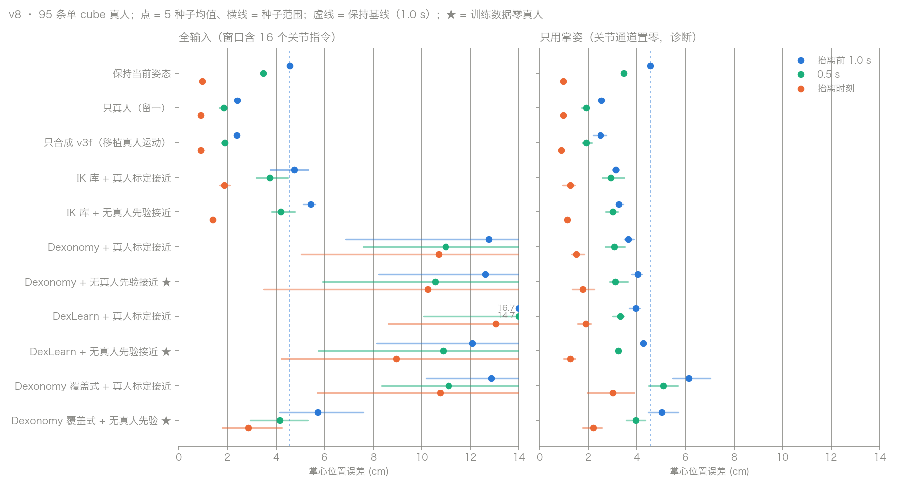
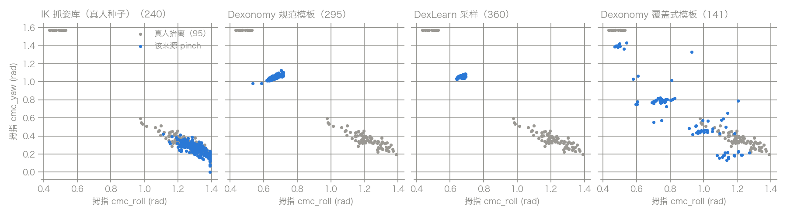
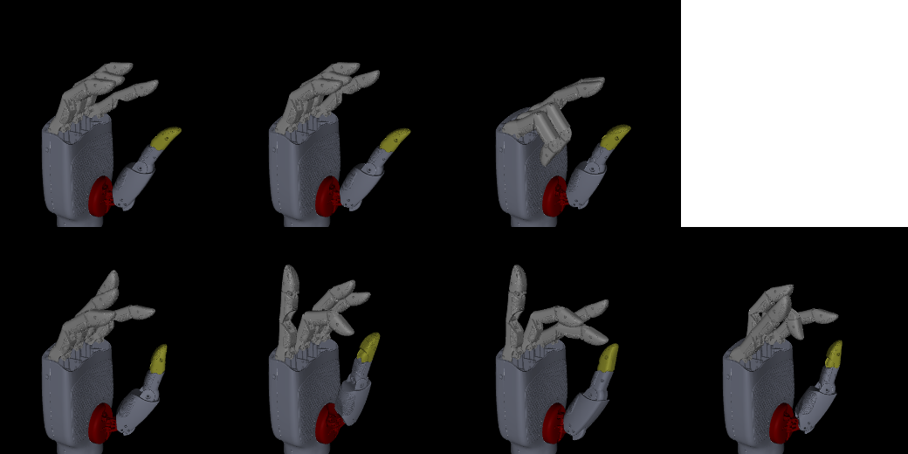
多物体与 demo 录像。10 条多物体真人（未复核）上，全输入的零真人臂 1 s 前 6.6–10.4 cm（保持 4.62，v3f 5.45），抬离 3.3–10.2 cm（保持 0.64）；只用掌姿时 Dexonomy 零真人臂 4.62 / 4.38 / 1.57（对称最小 3.13 / 2.65 / 1.05），与保持相当。10-04 demo 录像 20261004T173900Z 的 2 条 cube pinch（数据集标签）：保持 2.11 / 1.09 / 0.61，v3f 2.28 / 1.76 / 1.34，零真人全输入 6.0–11.6 cm，只用掌姿 1.9–2.0 / 1.2–1.3 / 0.9–1.1。n = 2，只作示意。真值口径：本节 demo 两条的真值 = 数据集标签（第一帧物理实际抬离的 L20 掌位，物体系取物理行里方块的实时位姿，与 95 条同一定义）；上面 v7 部署小节用的是在线日志进入 Transport 第一行的 cur（在线物体系）。那一帧方块已被提起 5.8 / 4.5 cm，在线物体位姿没跟上，两种真值相差 5.6 / 3.9 cm，两节的数字不可混比。
可以直接在 demo 里试的 checkpoint（generative_final.py，只用一份合成数据，归一化器与接触点先验都来自合成，fit-final 格式 33 通道）：results/（覆盖式模板、全输入）与 results/（规范模板、关节通道经归一化器置零，live.py 不用改）。把 demo 命令里的 MJQUEST_CHECKPOINT 换成它们即可；离线回放这场录像两者都能加载、帧映射精确，手离物体 30 cm 内时与现部署模型的预测差中位 3.8 / 3.9 cm（只真人模型差 15 cm）。
失败解剖：第一次冒烟时 Dexonomy 的 init 碰撞筛把 8192 个候选全部拒掉，查出 09-23 的 L20 Dexonomy 资产两处缺陷——远节骨架线沿指腹表面画（指腹一接触物体骨架就"穿模"），拇指指腹关键点吸附到端盖、法向指向自身掌侧（物体被放进拇指里）；改为远节碰撞网格中轴 + 由屈曲方向和凸包外法向重定指腹后，对捏模板的指垫对向误差 40–50° → 0.1°。berlin：Dexonomy 钉的 warp 1.8.0 在 CUDA 13 驱动上初始化失败（换 1.10.1）；全机严格 overcommit，已初始化 CUDA 的进程并发 fork 数据加载子进程报 ENOMEM（DexLearn 改常驻 worker，Dexonomy init 减到 4 个 worker）；NFS 家目录负载下 glob 偶尔返回空（加重试）。全程只用 GPU 0。
待补：DexLearn 在覆盖式模板数据上重训（130 个训练物体上的覆盖式 Dexonomy 已开跑，grasp 阶段 15 万个候选太慢，本轮停掉）。本轮 DexLearn 与 Dexonomy 直出无差别，所以预期上限是覆盖式 Dexonomy 直出的 5.73 / 4.14 / 2.85 cm——仍不过验收线。
版本 v9 · 2026-10-06 · 生成数据学抓取 + 在线学习学这位操作者（计划与执行记录 human_machine_interaction · hand_control/plan/2026-10-06-online-personalisation.md；结果在 HMI 仓库 training/artifacts/stage12_intent/online/ 与 synthetic/gen/results/）
第一步：数据生产还剩多少空间。v8 的补记说零真人数据的关节问题来自「手指与接近同步合拢」的进度钟。本轮实测修法：手指指令与接近进度脱钩——起始姿态、终点、合拢开始时刻与时长都随机，四分之一的 trial 不合拢，标签不变；规范 Dexonomy 抓姿库 + 无真人先验接近，同协议 5 种子：4.02 / 3.68 / 2.19 cm（同步合拢 12.63 / 10.55 / 10.24，种子范围 1 s 从 8.2–25.6 收窄到 3.6–4.4；只用掌姿 4.06 / 3.14 / 1.77；保持 4.56 / 3.48 / 0.97）。崩溃去掉了，1 s 追平只用掌姿、比保持好 0.91 [0.63, 1.22] cm，越近抬离越差于只用掌姿。零真人数据生产的空间基本用完：剩下的差距是人的掌姿与接近习惯——正是在线学习要补的。
标签从哪来。实时预测器每 20 ms 收到头显的完整遥测；抬离（该 trial 第一个 Transport）那一帧的手掌位姿换到物体系就是这次抓取的标签：方块用物体的完整姿态（手握住以后与取哪一帧无关），球／圆柱用世界轴；手指部分取最后一条指令（q_ref 标签）。头显报 success 才学，drop 与没有结果的只存盘，与数据集的筛选一致。一次抓取按数据集同一切法（抬离前 ≤ 3 s，每 0.05 s 一个 1 s 窗）变成 40–57 个训练窗。在 2026-10-04 的 demo 录像上回放：两次抓取的抬离时刻与数据集差 16／3.5 ms，标签位置差 0.81／0.64 cm。
逐次模拟（先测后学）。95 条真人按录制顺序流过：每条先用当前模型预测它的 5 个评测窗，再学它——第 k 条的误差就是现场第 k 次抓取会看到的误差。超参只在前 43 条（pilot）上选，后 52 条（formal）留出。基座 = 只用掌姿的零真人模型（部署的混合模型见过这些 trial，不能用）。这 95 条都是同一位操作者录的，所以这条曲线就是这位操作者的个性化曲线。
| 方法 | 学了什么 | formal 留出段 1.0 / 0.5 / 0 s | 第一次过线 | 第 10–95 次在线下的比例 |
|---|---|---|---|---|
| 保持当前姿态 | — | 4.08 / 2.99 / 0.94 | — | — |
| 不学习（零真人基座） | — | 4.02 / 2.52 / 1.33 | 第 76 次 | 6 % |
| 常数修正 | 已完成的成功抓取 | 2.52 / 2.02 / 2.31 | 第 6 次 | 38 % |
| 线性修正（基座输出 + 末帧掌姿上的岭回归） | 同上 | 1.66 / 1.41 / 1.55 | 第 6 次 | 93 % |
| 只调最后一层 | 同上 | 2.00 / 1.59 / 1.29 | 第 6 次 | 60 % |
| 全网络微调（现场默认） | 同上 | 1.86 / 1.54 / 0.89 | 第 6 次 | 74 % |
| 从零只学这位操作者（参照，无基座） | 只有已完成的抓取 | 2.16 / 1.78 / 0.80 | 第 7 次 | 62 % |
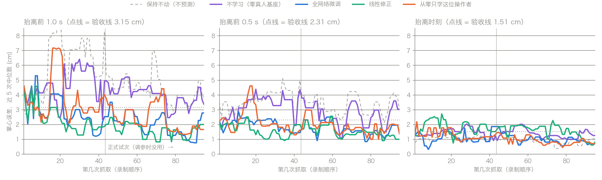
怎么读。① 线性修正在 1.0／0.5 s 最好，但抬离时刻差于保持——它的常数项和掌姿项不随手到位而消失；加一个随剩余距离衰减的门会把 1 s 的修正一起削掉（pilot 上 2.46–2.96，不加门 2.28）。全网络微调三个时刻都好于保持，选它做现场默认。② 生成数据基座的作用在前 40 次：第 11–20 次 1 s 中位，从零只学 6.33（另一次运行 4.86），基座 + 线性修正 2.48；到 formal 段从零只学追上来（差 0.1–0.5 cm）。同一方法换种子两次运行差 0.3–0.4 cm，formal 段 0.4 cm 以内的差别在噪声内。③ 用手指脱钩的基座重跑一遍，学完后与只用掌姿基座等价（formal 段全网络微调 1.96 / 1.31 / 0.80、线性修正 1.72 / 1.43 / 1.59）。④ 更新耗时（Mac CPU）：全网络微调中位 0.10 s，线性修正与常数修正不到 1 ms。
现场版。实时预测器加 --online ft|ridge|…（demo 脚本 MJQUEST_ONLINE）：每次成功抓取先用学之前的模型给这次打分（展示模型、基座、保持各一份），再后台更新、原子替换；头显看到的是更新后的 m0（je 集成与接触点头不在线更新）。每次抬离都落盘到 training/artifacts/stage12_intent/online/<UTC>/：样本、标签、遥测里的掌姿与物体位姿、结果、更新日志、权重——这是这次 session 抓取的备份，采集器自己的录制是第二份；--online-resume 从上次接着学。预测日志每帧同时记基座预测，事后可以直接算现场的学习曲线。7 个单元测试与分层测试通过；回放与 UDP 冒烟走通。限制：录像只存约 1 Hz 的完整遥测，回放里抬离前最后约 0.5 s 的物体位姿是旧的（现场 50 Hz 没有这个问题）；多物体的在线学习离线没法验证（只有 10 + 2 条）。
待补：用户实测的现场学习曲线（展示模型 vs 基座，逐次）、多物体、跨 session 续学。
版本 v10 · 2026-10-07 · 生成式终点 + DexYCB 真人运动（计划与执行记录 human_machine_interaction · hand_control/plan/2026-10-07-dexycb-human-motion.md；数据 training/artifacts/stage12_intent/synthetic/gen/gd_dexycb.npz，结果在同目录 results/ 与 results_poseonly/，像不像人的检验在 diag_20261007/）
做法。DexYCB subject 01 的 50 条右手抓取（09-23 路线 A 的导入：8 相机融合，L20 hand_base_link 目标经遥操作杠杆，16 个手指指令来自生产重定向器，30 fps、每条 2.4 s）。抬离按头显规则重定：物体沿标定里 AprilTag 的 z 轴（真上方）升高 2.5 cm 并保持 0.1 s。序列从手起动开始录，起动到抬离 1.25 s。每条合成 trial：按无真人先验的舒适规则选一个 Dexonomy 终点，取一条 DexYCB 运动在物体系里相对它自己抬离位姿的变化（手腕平移、旋转、手指指令），从库终点回放；放慢 1–3 倍（零真人生成器原有的通用先验，没按本项目录像调）；指令路径扫过物体超过 5 mm 或桌面超过 3 mm 的丢掉，检查点按各自的放慢倍数落在人自己的运输段。留下 2145 条，来自 46 条人的运动。
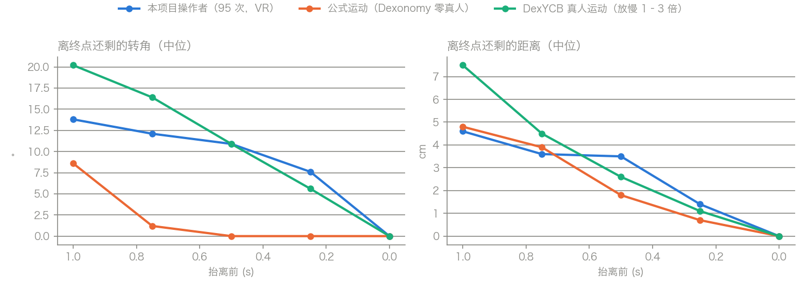
| 训练数据（终点）＋ 运动 | 全输入 | 只用掌姿 |
|---|---|---|
| Dexonomy ＋ 公式运动，手指同步合拢（v8） | 12.63 / 10.55 / 10.24 | 4.06 / 3.14 / 1.77 |
| Dexonomy ＋ 公式运动，手指脱钩（v9） | 4.02 / 3.68 / 2.19 | — |
| Dexonomy ＋ DexYCB 真人运动（v10） | 6.64 / 6.27 / 7.11 | 3.85 / 2.81 / 1.43 |
| IK 抓姿库 ＋ 本项目操作者运动的移植（v3f） | 2.39 / 1.89 / 0.91 | 2.51 / 1.93 / 0.90 |
| 只用真人（3 组留一） | 2.41 / 1.85 / 0.91 | 2.55 / 1.92 / 0.97 |
| 保持当前姿态 | 4.56 / 3.48 / 0.97 | 同左 |
像不像人。同一个分类器：DexYCB 版仍然分得开（全部 1.00，只看手腕运动 0.99，只看手指 1.00）。对上的是节奏：抬离前 0.5 s 还剩 10.9°，与操作者完全相同（公式 0°）。没对上的是来向：在终点手掌系里，操作者先沿手指方向进来、最后绕指尖转；DexYCB 的手从手背一侧沿掌心法向贴上去——大物体整手握的接近方式（subject 01 64 % 是四五指）。筛选也说明了这一点：56 % 的移植因手腕路径扫过小物体被丢，留下的偏向泡沫砖、马克笔、剪刀、香蕉这类小物体／精细抓取。
怎么读。① 有数据支撑的是「任务不同」：要的是小物体的指尖捏取，而不是笼统的「真人运动」。「界面不同」（VR 遥操作、没有触觉）只是假设，本轮分不开。② 运动池只有 1 个人的 46 条，有效的 v3f 用了约 60–90 条本项目的运动；1 s 的差距里有多少来自池子小、单人习惯，没有更多 subject 分不开。③ 全输入的失败与 v8 同一个机制（手指通道出分布）；自然的修法是 DexYCB 运动再加 v9 的手指脱钩，本轮没跑。
可选的下一步：DexYCB 其余 9 个 subject 里筛精细抓取（要下载约 9 × 12 GB 的原始包才拿得到标签）；GRAB（有三种尺寸的方块／球／圆柱，需用户本人注册 MANO 与 GRAB）；或者直接靠本项目操作者自己的运动——v9 的在线学习第 5–7 次抓取就过线。
版本 v11 · 2026-10-07 · 在线学习的两个改进：多任务输出、线性修正与微调按距离混合（计划与执行记录 human_machine_interaction · hand_control/plan/2026-10-07-online-variants.md；代码 training/stage12_intent/services/level_2_models/online_multitask.py 与 level_3_experiment/online_variants.py；结果在 training/artifacts/stage12_intent/online/sim_multitask/ 与 sim_hybrid/）
问题与做法。用户问在线学习还有没有提升空间，以及加轨迹预测（输入历史 1 s，输出未来 1 s 加接触点）抓取策略是不是学得更快，说「试一试」。两个实验都用 v9 的逐次模拟（每次抓取先测后学），并改了两处：① 调参目标改为 pilot 上 1.0、0.5、0 s 三个时刻的平均误差各除以验收线再平均——v9 只看 1.0 + 0.5 s，所以选中了抬离时刻差于保持的线性修正；② 多一条流：52 条 formal 单独从基座开始学，前 20 次完全没参与调参，「学得快不快」在这条上最干净。配对区间是逐 trial 的 bootstrap，只含 trial 间的波动；种子间的一致性另报。这次没测的：95 条全是成功、都有抬离标签，所以「未来轨迹不需要标签，掉落和两次抓取之间的运动也能学」这一条模拟里测不了，只测了「每次抓取的监督更密」。
混合的三种拼法（都只用预测时就有的信息；现场不知道离抬离还有几秒）：按剩余距离加权——预测 = w·线性修正 + (1−w)·微调，w = min(1, 微调模型预测的剩余掌心位移 / 6 cm)，r0 在 pilot 上从 1–12 cm 里选，6 cm 最好；恒 0.5 平均；叠加——每次微调后，在微调模型自己的残差上再拟合线性修正。实际给线性修正的权重（中位）：1.0 s 0.70、0.5 s 0.51、抬离时刻 0.19。
| 方法 | v9 基座 | 换 4 个基座 | formal 单独从基座开始：前 20 次 1.0 / 0.5 / 0 s 对微调（配对，cm） |
|---|---|---|---|
| 保持当前姿态 | 4.08 / 3.37 / 2.99 / 1.57 / 0.94 | 同左 | — |
| 不学习（零真人基座） | 4.02 / 3.15 / 2.52 / 1.84 / 1.33 | 3.74 / 3.29 / 2.85 / 1.98 / 2.01 | — |
| 全网络微调（v9 现场默认） | 1.89 / 1.77 / 1.55 / 1.50 / 0.89 | 2.00 / 1.75 / 1.55 / 1.49 / 1.11 | 参照 |
| 线性修正（v9，λ 10） | 1.66 / 1.59 / 1.41 / 1.39 / 1.55 | 1.57 / 1.56 / 1.50 / 1.48 / 1.46 | −0.59 / −0.19 / +0.64 |
| 恒 0.5 平均 | 1.58 / 1.50 / 1.40 / 1.32 / 0.98 | 1.66 / 1.53 / 1.42 / 1.40 / 1.02 | −0.47 / −0.14 / +0.17 |
| 叠加 | 1.87 / 1.76 / 1.66 / 1.44 / 0.83 | 1.78 / 1.62 / 1.47 / 1.49 / 0.96 | −0.16 / −0.07 / +0.03 |
| 按剩余距离加权混合（v11） | 1.38 / 1.43 / 1.49 / 1.44 / 0.88 | 1.50 / 1.56 / 1.42 / 1.46 / 1.04 | −0.53 [−0.89, −0.20] / −0.20 [−0.37, −0.03] / +0.07 [−0.01, +0.15] |
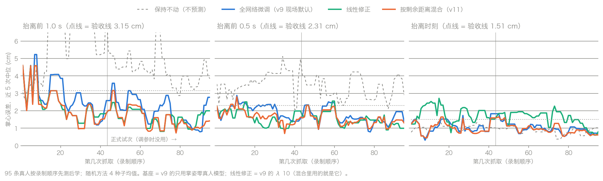
怎么读混合。① 加权混合在 1 s 前好过两个组成部分（1.38 对 1.89 / 1.66）——两种方法错的方向不同，平均起来互相抵掉一部分；0.5 s 好过微调；抬离时刻与微调持平。配对：留出段 1.0 / 0.5 / 0 s 对微调 −0.43 [−0.67, −0.24] / −0.11 [−0.19, −0.03] / −0.03 [−0.07, +0.02] cm；4 个在线种子各自的差相差不到 0.07 cm；换 4 个基座 −0.40 / −0.12 / −0.07。② 恒 0.5 平均在 0.5 s 略好（1.40），但抬离时刻 0.98 高于保持 0.94——按距离加权就是为了护住抬离时刻。③ 叠加修不动 1 s，但抬离时刻最好（0.83）。④ 限制：formal 单独开始的后段，0.25 s 与保持持平（1.43 = 1.43）；前 10 次的抬离时刻所有方法都差于保持（基座本身就差于保持）。⑤ 更新耗时同微调（中位 0.12 s），线性修正那一半不到 1 ms。
多任务输出。4 种零真人基座（只用 gd_free、只用掌姿，配方同 v9 基座，各 4 个种子）：只学终点（对照，同一训练器把辅助权重设 0，单元测试证明与原训练器逐位一致）、加未来 1 s 掌姿（20 帧 × 位置 + 旋转，相对当前帧；用输入流自己的未来，现场永远拿得到）、加拇指／食指接触点、两个都加。在线学习也带同样的辅助项；另有一臂用「两个都加」的基座但在线只学终点。每臂同一个 9 点网格各自调参。v9 的基座是在 berlin GPU 上训练的，CPU 复现不了逐位，所以这一组只做组内比较。
| 基座与在线学习的输出 | 不学习，第 44–95 次 | 学习后，第 44–95 次 | formal 单独开始，第 11–20 次 | 过线 |
|---|---|---|---|---|
| 保持当前姿态 | — | 4.08 / 2.99 / 0.94 | 4.36 / 2.80 / 0.87 | — |
| 只学终点（对照） | 3.74 / 2.85 / 2.01 | 1.80 / 1.51 / 1.07 | 2.25 / 1.68 / 1.30 | 第 6 / 9 次 |
| ＋ 未来 1 s | 3.49 / 2.55 / 1.67 | 1.70 / 1.58 / 1.06 | 1.84 / 1.46 / 1.44 | 第 5 / 9 次 |
| ＋ 接触点 | 3.34 / 2.55 / 1.76 | 1.72 / 1.56 / 1.05 | 2.06 / 1.57 / 1.36 | 第 5 / 7 次 |
| ＋ 两者 | 3.65 / 2.62 / 1.56 | 1.71 / 1.60 / 0.98 | 1.82 / 1.40 / 1.68 | 第 5 / 10 次 |
| 两者的基座，在线只学终点 | 同上 | 1.85 / 1.57 / 1.03 | 2.45 / 1.70 / 1.24 | 第 5 / 9 次 |
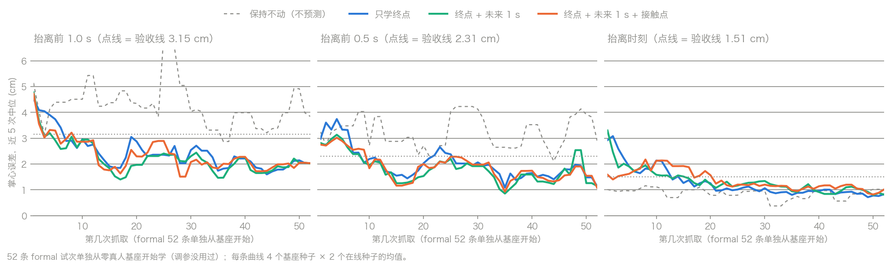
怎么读多任务。① 辅助输出让零真人基座本身好一点：1 s 前好 0.1–0.4 cm，抬离时刻好 0.25–0.45 cm（各 4 个种子，对照基座抬离时刻种子间 1.16–3.05 cm，噪声大）。② 在线学习没有因此变快：过线次数不变。唯一稳定的是「未来 1 s」在前 20 次的 1 s 前好约 0.3 cm（formal 单独开始 −0.35 [−0.59, −0.12]，4 个基座种子都为负；录制顺序 −0.31 [−0.59, −0.06]，4 个里 3 个），和它基座好出来的量差不多——更像起点好一点，不是学得更快。③ 两个辅助项叠加不比只加未来 1 s 好；用它的基座但在线只学终点则与对照无差别。④ formal 单独开始的后段，带辅助输出的在抬离时刻差 0.1–0.2 cm（录制顺序上没有出现）。结论：每次抓取的监督加密不会让在线学习质变，现场不采用；「未来 1 s」真正的卖点是不需要标签，要现场数据才能测。基座要不要 DDPM／FM：仍不需要——v1 的序列生成器作终点预测器都没赢过残差 M0。
下一步：现场版（终点 + 未来 1 s + 无标签运动）见 v12；把加权混合接进现场（--online switch）留到之后对比。更正上一轮的回答：v9 调参里学习率 1e-3 的四组目标值是 2.73–3.00。
版本 v12 · 2026-10-07 晚 · 现场在线学习：终点 + 未来 1 s + 无标签运动（计划与执行记录 human_machine_interaction · hand_control/plan/2026-10-07-online-variants.md §5；代码 training/stage12_intent/services/level_3_experiment/online_live.py（--online ft_fut）与 hand_control/demo/demo_online_learning.sh；部署 checkpoint training/artifacts/stage12_intent/results/final_gen_gd_free_poseonly_fut.models.pt）
做法。用户的判断：输出加未来 1 s，数据量足够大时数据效率更高，不只靠最后接触那一刻。模拟测不了的那一半——不需要标签、每段运动都是数据——只能在现场测，所以现场版直接带上它。部署 checkpoint 的 m0 换成上面「＋ 未来 1 s」的基座（其余模型不变）；在线学习 --online ft_fut：成功抓取学终点和每个窗口的未来 1 s；掉落、没有结果、从没抬起的试次，以及成功抓取里早于有标签 3 s 的那段接近，只学未来 1 s。无标签窗口要满足：2 s 内手至少移动 1 cm、手离物体 50 cm 以内、50 ms 内不跳变超过 8 cm——95 条真人和合成训练窗口 99–100 % 都满足，10-04 demo 末尾 350 s 跟踪冻住的手（7063 个窗口）全被滤掉。一次更新仍要求至少有一次成功抓取。每段运动都存盘（streams/），续学沿链读回之前所有 session 的抓取与运动，数据一直累积。操纵台「采集会话 → 类型」新增：在线学习·终点 + 未来 1 s／·接着上次学／只学终点（hand_control/demo/demo_online_learning.sh：无共享控制、四物体、40 次提示 pinch）。回放冒烟（10-04 demo，现场同一个预测器）：两次抓取都学了，抓取前那段接近得到 540 个无标签窗口；只有两次，不算结果。实测之后用存下来的运动在同一份数据上离线对比「只学终点／加未来／再加无标签运动」。
待补：用户的头显实测（现场逐次误差：展示模型、基座、保持，各在学之前打分）；在存下来的运动上离线对比「只学终点／加未来（只用有标签的）／再加无标签运动」，回答无标签运动多了以后是否学得更快。
版本 v13 · 2026-10-07 12:00 · 数据生成方式审视：轨迹连续性、真人数据、数采场景（审视备忘与执行记录 human_machine_interaction · hand_control/plan/2026-10-07-data-generation-review.md；判别实验、两格补跑与配对 training/artifacts/stage12_intent/synthetic/gen/diag_20261007b/；数据 gd_dexycb_dec.npz、gd_dexycb_prec.npz、gd_dexycb_prec_dec.npz，结果在同目录 results/ 与 results_poseonly/）
判别实验：来向是任务效应还是界面效应。v10 的运动池 64 % 是四五指的整手握，当时把「来向不对」归为任务不同。这次把 subject-01 的 50 条右手运动按 09-30 接触探针的抬离接触指分成精细（拇指 + ≤ 2 指：pinch 7、tripod 9）与整手（34），和操作者的 95 条算同一个统计量：手腕相对自己抬离位姿的偏移方向，在抬离时的手系里（x 小指→食指、y 掌法向、z 腕→指）；按剩余距离取样以消掉遥操作慢 1–3 倍的影响。远处（8 cm）双方都沿手指方向（−z）进来；最后 5 cm 操作者的手腕从食指侧（+x）绕进来，DexYCB 的手——精细与整手一样——从小指侧 + 掌法向（−x, +y）贴上去。
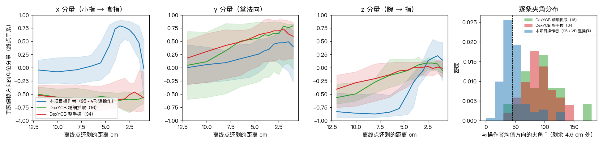
| 取样点 | 操作者 95 | DexYCB 精细 16 | 只 pinch 7 | DexYCB 整手 34 |
|---|---|---|---|---|
| 剩余 8.0 cm | (−0.10, +0.11, −0.99) R 0.70 | 52°，12 % | 44°，0 % | 56°，24 % |
| 剩余 4.6 cm（≈ 操作者 1 s） | (+0.51, +0.33, −0.79) R 0.62 | 96°，6 % | 102°，14 % | 92°，3 % |
| 剩余 3.5 cm（≈ 操作者 0.5 s） | (+0.86, +0.43, −0.28) R 0.70 | 114°，0 % | 122°，0 % | 104°，3 % |
| 剩余 2.0 cm | (+0.80, +0.49, +0.36) R 0.67 | 110°，0 % | 108°，0 % | 101°，6 % |
| 训练数据（终点均为 Dexonomy 库）＋ 运动 ＋ 手指 | 全输入 | 只用掌姿 |
|---|---|---|
| DexYCB 运动 ＋ 人的手指（v10） | 6.64 / 6.27 / 7.11 | 3.85 / 2.81 / 1.43 |
| DexYCB 运动 ＋ 手指脱钩（v13） | 3.59 / 3.37 / 2.02 | 3.35 / 2.84 / 1.48 |
| 只用 16 条精细抓取的运动 ＋ 人的手指（v13） | 10.39 / 10.57 / 12.72 | 4.30 / 3.60 / 1.29 |
| 只用精细抓取的运动 ＋ 手指脱钩（v13） | 3.63 / 3.40 / 2.16 | 3.73 / 3.02 / 1.95 |
| 公式运动 ＋ 手指脱钩（v9） | 4.02 / 3.68 / 2.19 | — |
| IK 抓姿库 ＋ 本项目操作者运动的移植（v3f） | 2.39 / 1.89 / 0.91 | 2.51 / 1.93 / 0.90 |
| 只用真人 / 保持当前姿态 | 2.41 / 1.85 / 0.91 · 4.56 / 3.48 / 0.97 | 2.55 / 1.92 / 0.97 |
怎么读。配对（逐 trial、种子平均后的差，均值 + bootstrap 95 %，1.0 / 0.5 / 0 s）：脱钩 − v10 全输入 −3.13 [−3.51, −2.74] / −3.26 / −5.55——崩溃是手指通道的，不是手腕的；DexYCB 手腕 − 公式手腕（同为脱钩）−0.52 [−0.80, −0.23] / −0.33 / −0.17，而同一份手腕数据的两次构建（只用掌姿、手指被屏蔽；差别来自抽样与运动学筛选留下的子集：2446 对 2145 条）就差 −0.31 [−0.59, −0.02]，所以 1 s 处 0.5 cm 以内的差别不要当真，稳的只有末段节奏；精细池 − 全池（只用掌姿）+0.53 [+0.27, +0.79] / +0.70 / −0.14，与上面的方向统计一致。对保持：脱钩版 1 s 好 1.42 cm，0.5 s 持平，抬离差 1.09 cm。多物体 10 条（未复核，对称最小）：保持 3.01 / 1.73 / 0.62，脱钩版 2.97 / 2.59 / 1.94，只用真人 5.98 / 5.57 / 3.74——仍是「覆盖而非精度」。
真人数据怎么用、「不穿透」怎么定义。链条的每一步都已存在（导入 dexycb.py；接触感知重解与加力 + MuJoCo 闭合是 09-30 的探针脚本，在仓库外），但真人终点进训练集的物理门没有产线化。「落点符合物理」只能定义成机械手实际停住的构型过抓姿库的 validate（接触在表面、无指节侵入、合拢→加力→抬 8 cm→晃动不掉），不能定义成「指令不穿过表面」——VR 无触觉的指令本来就穿（抬离指令指垫间距 2.2 cm），而不穿过表面的指令回放只握住 0–6 %，加力后才 67–88 %、重解 + 加力 70–96 %。非凸物体要先做凸分解。公开数据今天核实：SHOW3D（HF 不设门槛，Quest 3 几何，hand pose v3）带物体位姿的 pick-up 场景只有 22 个（4 人、6 个物体，坐标系随人移动）；DexYCB 其余 9 人公开可下（每人 12 GB，标签 250 MB）；HOT3D 要点许可、GRAB／MANO／OakInk2／ARCTIC 要用户本人注册。berlin 5 张 H200 空闲，代码与 DexYCB 导入已同步，没有启动下载。
数采场景与 digital twin。现在的四物体是按 YCB 类比物（番茄汤罐、网球、饼干盒比例）用基元代替的，头显只画几何类型 + 尺寸；「圆柱／球太多」是当时为了不 vendor 网格的设计。真正有 digital twin 的是 YCB：21 个扫描网格已在本机，实物套件可购买，DexYCB／HO-3D／GraspNet／BOP 都用它，而且和已导入的真人数据同物体。建议换成 6–8 个 YCB 子集（马克笔、泡沫砖、金枪鱼罐、明胶盒、布丁盒；番茄汤罐、糖盒；马克杯或香蕉），保留 5.4 cm 方块作锚。要改：Mac 场景加 mesh 类型 + CoACD、头显走 L20 网格同一条导出路并重建 APK、抓姿库在网格上采样（Dexonomy 本来吃网格）、预测器物体编码（现在是 one-hot 4 + 尺寸，无法表示 YCB）、live.py 的物体系约定；等于一轮新的采集。两个与数据来源无关的前提：物体编码换成几何描述；复核 21 条 v2-objects trial（自 09-30 起一直没做）。
没做 / 待办：「界面 vs 场景」只有一个 DexYCB subject 分不开（可用 SHOW3D 的 pick-up 或一个非操作者的 VR session 分）；精细／整手分类来自胶囊代理接触探针，不是人工标注；接近运动继续走操作者自己的路（录像移植 + 在线学习）；真人终点要先把 human_bank.py（重解 + 加力 + 闭合验证，不 import hand_control）做出来，再谈 10 人的终点覆盖与 berlin。
补记（2026-10-07 下午）。用户批准场景换 YCB 子集（实施另起版本号，第一步只做 Mac 侧资产：子集选定、CoACD 凸分解、MJCF + 质量、Dexonomy 在网格上生成、抓姿库复验），并重申 berlin 的 H200 最多只用一张。追问四条（脱钩是什么、为什么改善、是否需要真人数据、怎么用／是否 retarget／物理怎么保证）的回答记在 human_machine_interaction · hand_control/plan/2026-10-07-data-generation-review.md §7：脱钩 = 手指指令与手腕运动独立抽样、标签不变；改善是去掉了「手指 = 进度钟」的伤害而不是加入信息（真人上关节通道只值 0.14 cm）；需要的是操作者本人的数据，别人的运动不需要、别人的终点只在物体编码与物理门之后可选；DexYCB 经生产重定向器 retarget，终点的物理由抓姿库的 MuJoCo 验证保证、路径只做运动学筛选，「一定成功」只能是过滤而不是对原始人手姿态的保证。
版本 v14 · 2026-10-07（v13 之后） · 在线学习的四个问题：数据集、会自适应的操作者、基座大小、还有哪些在线学习（计划与执行记录 human_machine_interaction · hand_control/plan/2026-10-07-online-strategies-coadaptation.md；代码 training/stage12_intent/services/level_2_models/online_strategies.py 与 level_3_experiment/online_study.py；结果在 training/artifacts/stage12_intent/online/study_v14/）
问题与做法。用户（10-07 下午）把 Stage 1.2 分成两条线：生成式 session 管数据生成，本线管在线学习，问四个问题。三个实验都用 v9 的逐次模拟（rec = 95 条按录制顺序，1–43 调参、44–95 留出；formal = 52 条单独从基座开始）、v11 的调参目标（pilot 上三个时刻各除以验收线）、对 switch 与对 ft 的逐 trial 配对 bootstrap、过线次数；新加一个判据「新 session 回弹」= rec 流 6 个 session 边界上新 session 前 2 次减上一 session 末 3 次。没有动 v9–v12 的任何在线学习文件；M0 只加了可选的宽度参数（默认网络逐键不变，有测试）。口径：全部是离线逐次模拟或仿真的操作者；真人在环的在线学习只有今天一场 6 次抓取，不构成结论。
参照与基线都是已有版本的：全网络微调与线性修正见 v9，按剩余距离加权混合见 v11；本节只写新增的臂。臂（pilot 调参，参照固定在 v9／v11 的值）：sgd_new = 用户描述的那种，只拿最新一次抓取的窗口、热启动、几步 Adam（pilot 选 lr 3e-4、5 步；lr 3e-3 × 50 步发散到 49 cm）；recency_ft = 微调的抽样按 trial 年龄／session 年龄衰减、可只留最近 N 次（pilot 选 rho 0.9、不截窗；截 3 次最差）；forget_ridge = 线性修正加同样的权重，即遗忘 RLS 的批形式（pilot 自己选了不遗忘 = v9 ridge；另跑强行打开的 rho 0.95／rho_s 0.6）；replay_ft = 微调每批混 25 % 基座的合成窗口；knn = 非参数：基座在这位操作者过去窗口上的误差按末帧掌姿距离核平均；bll = 贝叶斯线性末层（基座 128 维嵌入 + 掌姿，闭式后验，带预测方差）；mix_knn／mix_bll = v11 的按剩余距离混合，远端换成 knn／bll。单元测试锁住：rho = 1 的遗忘 ridge = v9 ridge、均匀权重的 recency_ft 与 v9 ft 逐位同抽样、Mix(ridge) = v11 switch。
| 方法 | rec 44–95 | 对 switch（1 s） | formal 21–52 | 过线 rec / formal | 新 session 回弹 | 更新 s |
|---|---|---|---|---|---|---|
| 保持当前姿态 | 4.08 / 2.99 / 0.94 | — | 3.92 / 3.01 / 0.89 | — | — | — |
| 不学习（零真人基座） | 4.02 / 2.52 / 1.33 | +2.18 | 3.55 / 2.64 / 1.23 | 76 / 33 | +0.48 / +0.15 | 0 |
| 按剩余距离加权混合（v11 switch） | 1.36 / 1.50 / 0.86 | 参照 | 1.97 / 1.68 / 0.76 | 6 / 7 | +0.62 / +0.99 | 0.14 |
| 全网络微调（v9 ft，现场默认） | 1.86 / 1.54 / 0.89 | +0.42 [+0.21, +0.65] | 2.13 / 1.87 / 0.82 | 6 / 9 | −0.03 / +0.90 | 0.13 |
| 线性修正（v9 ridge） | 1.66 / 1.41 / 1.55 | +0.05 [−0.03, +0.13] | 1.83 / 1.58 / 0.98 | 6 / 7 | +0.77 / +1.08 | 0 |
| 大学习率只学最新抓取（sgd_new，用户描述的那种） | 2.64 / 1.93 / 1.51 | +1.07 [+0.70, +1.45] | 2.96 / 1.98 / 1.54 | 12 / 15 | +0.33 / +0.83 | 0.01 |
| 微调 + 近因加权（recency_ft） | 2.08 / 1.53 / 0.92 | +0.54 | 1.98 / 1.70 / 0.84 | 6 / 13 | +0.49 / +1.21 | 0.14 |
| 线性修正 + 遗忘打开（forget_ridge_on） | 1.59 / 1.59 / 1.34 | +0.07 | 1.94 / 1.58 / 1.08 | 6 / 7 | +0.98 / +1.40 | 0.01 |
| 微调 + 合成窗口回放（replay_ft） | 1.84 / 1.53 / 0.93 | +0.35 | 1.86 / 1.66 / 0.82 | 6 / 7 | +0.01 / +0.89 | 0.15 |
| kNN 非参数修正 | 2.14 / 1.40 / 1.46 | +0.53 | 1.92 / 1.45 / 1.32 | 6 / 7 | +0.40 / +0.81 | 0 |
| 贝叶斯末层（bll） | 1.85 / 1.48 / 1.70 | +0.40 | 2.27 / 1.61 / 1.31 | 23 / 9 | +0.13 / +1.17 | 0.01 |
| 混合，远端 kNN（mix_knn） | 1.83 / 1.42 / 0.81 | +0.35 | 2.08 / 1.59 / 0.77 | 6 / 7 | +0.26 / +0.79 | 0.17 |
| 混合，远端贝叶斯末层（mix_bll） | 1.83 / 1.47 / 0.88 | +0.31 | 2.20 / 1.62 / 0.82 | 6 / 9 | +0.11 / +1.08 | 0.17 |
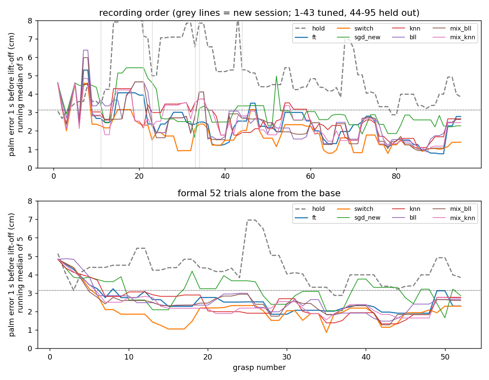
怎么读。① 没有一个臂超过 v11 的混合；最接近的是线性修正一族（1.59–1.66），而它们在抬离时刻差于保持。② 「大学习率 + 只学新数据」是会学的方法里最差的：比微调差 +0.65 / +0.46 / +0.54 cm（三个时刻区间都不含 0）——每次只看一个抓取的 ~50 个几乎相同的窗口，步子大就冲过头，步子小就学不动；v9 的微调成立靠「全缓冲 + 小步 + 回拉基座」三件事一起。③ 遗忘没有用：pilot 自己选了不遗忘，强行打开后新 session 回弹反而最大（+0.98 / +1.40）——基座自己在边界上也回弹（+0.48），说明回弹是「人换了状态」而不是「模型过时」；微调一族回弹最小（ft −0.03），因为它的修正随输入变化，线性修正是常数项 + 掌姿项，换了起手位置就偏。④ 合成窗口回放与微调无差别（−0.07 [−0.23, +0.09]）：L2-SP 已经把权重拴住，灾难性遗忘不是问题。⑤ kNN 不拟合任何东西、更新 0 ms，0.5 s 与 ridge 一样好，1 s 差、抬离差于保持。⑥ 贝叶斯末层单用起步最慢（第 23 次才过线：128 维嵌入在几次抓取上欠定），它的预测方差与误差只弱相关（Spearman +0.32，启发式「剩余位移」+0.37），作置信度不比现有的好。
「生成式基座」那半个问题不重跑：v1 的序列生成器 FMS（flow matching）与 DPS（DDPM 目标）作终点预测器都没赢过残差 M0（阶梯、序列生成器），v11 再次否定。本节只测「更大」：同配方（gd_free、只用掌姿、18750 步均匀批）把 M0 的宽度设为 32 / 128（现用）/ 512，各 3 个种子，Mac CPU 训练（23 / 43 / 138 s）；每种宽度在 pilot 上各调微调的学习率与步数（宽 32 选 3e-4 × 50，128 选 3e-4 × 25，512 选 3e-4 × 100），然后不学习／线性修正／微调／混合各跑 rec 与 formal 两条流（每基座 1 个在线种子）。CPU 基座与 v9 的 GPU 基座不逐位可比，只做组内比较。
| 宽度 | 在线学习 | rec 44–95 | formal 1–10 | formal 11–20 | formal 21–52 | 过线 |
|---|---|---|---|---|---|---|
| 宽 32（46,265 参数） | 不学习（零样本） | 3.59 / 2.70 / 1.24 | 4.63 / 2.69 / 1.38 | 3.39 / 2.26 / 1.29 | 3.48 / 2.94 / 1.16 | 第 56 / 13 次 |
| 线性修正 | 1.63 / 1.47 / 1.34 | 2.64 / 2.50 / 2.15 | 1.18 / 1.34 / 1.76 | 1.84 / 1.57 / 1.13 | 第 6 / 7 次 | |
| 全网络微调 | 1.87 / 1.73 / 1.22 | 4.02 / 2.93 / 1.99 | 1.88 / 2.15 / 1.44 | 2.40 / 2.11 / 1.06 | 第 6 / 14 次 | |
| 加权混合 | 1.57 / 1.50 / 1.10 | 2.67 / 2.66 / 1.89 | 1.26 / 1.61 / 1.36 | 2.01 / 1.80 / 0.99 | 第 6 / 7 次 | |
| 宽 128（221,849 参数） | 不学习（零样本） | 3.79 / 2.91 / 2.07 | 4.26 / 3.27 / 2.19 | 4.12 / 2.69 / 1.90 | 3.54 / 2.90 / 2.11 | 第 76 / 33 次 |
| 线性修正 | 1.55 / 1.51 / 1.48 | 2.75 / 2.63 / 2.31 | 1.44 / 1.13 / 2.32 | 1.93 / 1.70 / 1.21 | 第 5 / 7 次 | |
| 全网络微调 | 1.88 / 1.52 / 1.04 | 3.51 / 2.69 / 2.07 | 2.07 / 1.76 / 1.30 | 2.01 / 1.74 / 0.86 | 第 6 / 7 次 | |
| 加权混合 | 1.48 / 1.35 / 0.96 | 2.94 / 2.68 / 1.96 | 1.40 / 1.39 / 1.21 | 1.74 / 1.66 / 0.82 | 第 6 / 7 次 | |
| 宽 512（1,477,145 参数） | 不学习（零样本） | 3.37 / 2.48 / 1.76 | 4.06 / 2.78 / 2.04 | 3.10 / 2.24 / 1.43 | 3.30 / 2.56 / 1.80 | 第 57 / 14 次 |
| 线性修正 | 1.59 / 1.51 / 1.50 | 2.67 / 2.67 / 2.11 | 1.11 / 1.32 / 1.99 | 1.87 / 1.61 / 1.28 | 第 6 / 7 次 | |
| 全网络微调 | 1.85 / 1.57 / 0.85 | 3.10 / 2.69 / 1.65 | 2.04 / 1.51 / 0.86 | 2.13 / 1.74 / 0.72 | 第 5 / 8 次 | |
| 加权混合 | 1.45 / 1.41 / 0.83 | 2.53 / 2.60 / 1.55 | 1.18 / 1.34 / 1.00 | 1.82 / 1.60 / 0.72 | 第 5 / 7 次 |
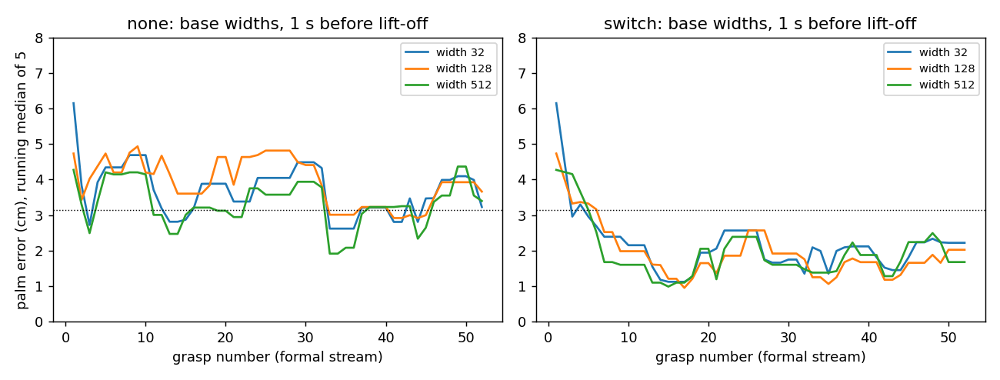
怎么读。① 零样本：宽 512 在 1 s 比现用的宽 128 好 0.3–0.5 cm（rec 留出段逐基座 3.26–3.45 对 3.71–3.92），但宽 32 也好于宽 128（3.38–3.72）——不单调，和每种宽度 3 个种子之间 0.2–0.3 cm 的离散同一量级；抬离时刻宽 32 反而最好（0.97–1.58，宽 128 的三个基座 1.16–3.05）。② 在线学习把差别抹平：加权混合在留出段 1 s 1.57 / 1.48 / 1.45 cm（宽 32 / 128 / 512），微调 1.87 / 1.88 / 1.85；formal 单独开始的第 21–52 次现用宽度最好（混合 2.01 / 1.74 / 1.82，微调 2.40 / 2.01 / 2.13）；过线都在第 5–7 次。③ 唯一一致的宽度效应在抬离时刻、在线学习之后：混合 1.10 / 0.96 / 0.83，微调 1.22 / 1.04 / 0.85——宽 512 好 0.1–0.3 cm，而 v9 的 GPU 基座（宽 128）在同一段已是 0.86。④ 代价：每次更新中位 0.05 / 0.07 / 1.37 s（宽 512 的微调要 100 步才在 pilot 上追平），现场每次抓取后的更新会从十分之一秒变成一秒半。结论：基座的大小不是在线学习的杠杆——它只决定前几次抓取的起点，而起点的差别比种子噪声还小；真正决定上限的是基座里没有的「这个人怎么靠近」（v8–v10），那要靠数据而不是参数。
与已有的两个仿真人的区别：Stage 1.3 的人群 v2是物理辅助的闭环——机器人的手指按 α 自己合拢，仿真人在关节空间里有缺陷并对辅助作出反应（迟滞、让步、减力），被评的是 RL 残差策略的抓取成功率；Stage 1.4 的 H2Hist（1.3 结果 v5，即 Q6）是把会话历史编成策略的输入，没有增益。本节是纯显示条件（Stage 1.2 的影子手，没有物理辅助）：仿真人改变的是终点（向看到的预测靠拢），被评的是预测器自己在闭环里的收敛与偏差，不是策略的成功率；两边用同一个概念（conformance／αh），对象不同。每次抓取：当前模型在自然录像的 1 s 评测窗上的预测 = 操作者在抬离前 1 s 看到的影子手 ŷ；操作者的实际落点 y′ = y + g·(ŷ − y)（只动掌心位置；影子离 intent 超过 6 cm 时不跟）；最后 1 s 的掌心轨迹按 smoothstep 渐变到新落点，训练窗与评测窗都从扭曲后的轨迹重切；模型在扭曲后的评测窗上打分两次——对 intent（自然标签）和对 realised（实际落点）；然后学 (扭曲窗, y′)。增益 g = 0（= 实验 1）、0.25、0.5、以及「信任」规则（g = 0.5·clip(1 − 近 5 次影子手误差 / 4 cm)：影子越准人越跟）。臂：不学习／线性修正／微调／混合，两条流，随机方法 2 个种子。这是什么：在明确行为规则下的闭环稳定性检验；不是什么：任何真人的模型——没有一位操作者在看着影子手的条件下被系统录过（10-04 两条、今天六条），g 无法校准。
| 段 | 在线学习 | g | 对 intent | 对 realised（现场日志看到的） | drift |
|---|---|---|---|---|---|
| rec 44–95 | 不学习 | 0 → 0.5 | 4.02 / 2.52 / 1.33 → 4.02 / 3.19 / 2.13 | 4.02 / 2.52 / 1.33 → 2.01 / 1.70 / 1.36 | 0 → 1.93 |
| 线性修正 | 0 → 0.5 → 信任 | 1.66 / 1.41 / 1.55 → 1.57 / 1.37 / 1.32 → 1.66 / 1.43 / 1.47 | 1.66 → 0.79 / 0.91 / 1.19 → 1.06 / 1.01 / 1.33 | 0 → 0.78 → 0.50（g 0.35） | |
| 微调 | 同上 | 1.88 / 1.54 / 0.86 → 1.68 / 1.72 / 1.09 → 1.72 / 1.58 / 0.92 | 1.88 → 0.84 / 1.14 / 0.81 → 1.21 / 1.29 / 0.82 | 0 → 0.79 → 0.44（g 0.29） | |
| 混合 | 同上 | 1.35 / 1.49 / 0.84 → 1.33 / 1.47 / 1.08 → 1.37 / 1.50 / 0.96 | 1.35 → 0.67 / 1.02 / 0.74 → 0.93 / 1.16 / 0.76 | 0 → 0.64 → 0.46（g 0.34） | |
| formal 1–20 | 线性修正 | 0 → 0.5 → 信任 | 1.65 / 1.85 / 2.06 → 2.28 / 1.98 / 1.57 → 1.64 / 1.77 / 2.16 | 1.65 → 1.14 → 1.37 | 0 → 1.14 → 0.34 |
| 混合 | 同上 | 1.98 / 1.67 / 1.39 → 2.70 / 1.82 / 1.80 → 1.94 / 1.70 / 1.40 | 1.98 → 1.35 → 1.40 | 0 → 1.35 → 0.35 |
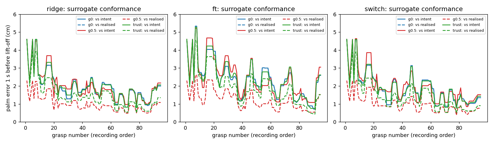
怎么读。① 闭环稳定：g 到 0.5 没有臂发散，drift 停在 0.3–1.1 cm（不学习时 1.9：基座影子离 intent 4 cm，人跟一半）；信任规则下 g 自己停在 0.3 左右（有在线学习）／0.05（没有：影子不准人就不跟）——正反馈有界。② 现场日志会高估：对 realised 的误差随 g 降到对 intent 的一半，对 intent 不动——评在线学习必须有不受影子手影响的真值（逐 trial 随机关掉显示）。③ 起步时自我实现会拖慢：formal 前 20 次 g = 0.5 时对 intent 的 1 s 误差 ridge 1.65 → 2.28、混合 1.98 → 2.70（先学会的是自己上一轮的错），留出段这一项为 0。④ 抬离时刻对 intent 随 g 变差（混合 0.84 → 1.08）：影子手把手拉偏了几毫米，这是 Stage 1.3 该关心的量。⑤ 线性修正的闭环对应 performative prediction（Perdomo 等 2020）的条件：标签对权重的敏感度 ∝ g，g ≤ 0.5 时 λ = 10 的岭回归强凸性足够，所以收敛；微调没有这种保证，只能实测。能不能「学会」分两层：在线学习在闭环里收敛到这个人——可以（上面）；学一个「人怎么适应」的模型（Stage 1.4 的 operator latent）——要多位操作者在环的数据，旧数据集做不到。
用户问基座能不能学到「抓取」这项技能本身、人用的不同的 a 是同一分布里的不同概率还是不同的分布、有没有可视化。做法（training/artifacts/stage12_intent/online/study_v14/diag_pa_given_o/）：对 95 条真人的每个评测窗，在基座的归一化掌姿通道上找生成数据（gd_free 的 cube054，612 条）里最近 1 秒运动最像的 50 个窗、和操作者自己其它 trial 里最像的 25 个窗，画它们的抬离掌位——两边的经验 p(a | o)。结果（95 条中位，1.0 / 0.5 / 0 s）：生成云的离散 7.0 / 5.5 / 2.6 cm，离真实落点最近的生成样本 5.8 / 6.6 / 5.6 cm，没有一个生成样本在 2 cm 内（只按末帧掌心位置匹配也是 3.2–3.6 cm、0 %）；操作者自己的云离散 1.9 / 1.8 / 1.5 cm、最近点 1.2 / 1.1 / 1.0 cm、40–52 % 在 2 cm 内；不加条件时整个生成终点集合离操作者终点最近 3.2 cm（37 % 在 2 cm 内）。基座 4.2 / 2.9 / 1.3 cm 好于生成云的局部均值 7.1 / 7.8 / 8.7（网络在插值，不是查表），留一 trial 的线性修正 1.7 / 1.5 / 1.4 逼近操作者云的离散。
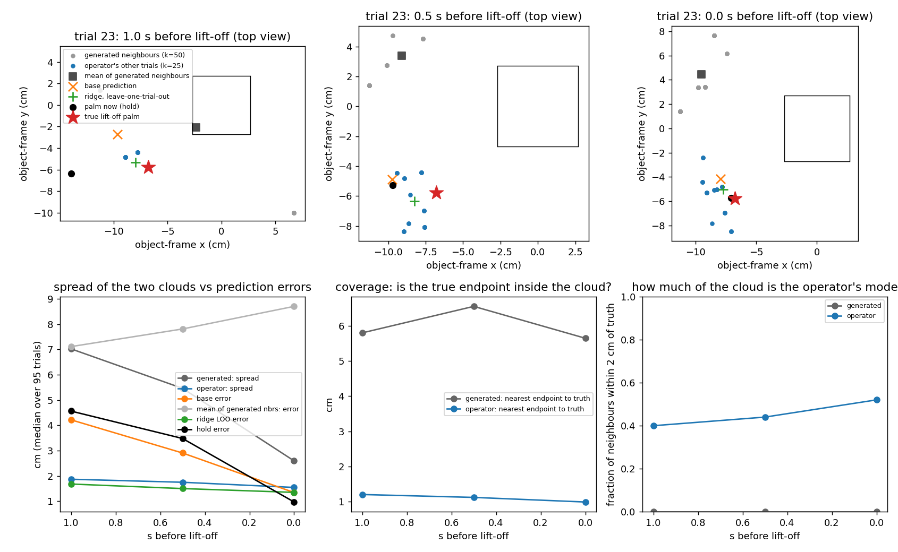
怎么读。① 给定同样的运动，生成数据会去的地方离这个人真正去的地方 5–7 cm，所以不是同一分布里的低概率模式，是另一个条件分布：「什么运动通向什么终点」这张映射是这个人自己的；生成终点集合只粗略覆盖了落点区域（3.2 cm），差的是 p(o | a)——人怎么靠近，与 v10、v13 的结论一致。② 基座能学的「技能」是几何：对这个物体哪些掌位是物理上可行、稳定的抓取（生成库是物理复验过的）；学不到的是这个人从哪条路靠近、停在可行集的哪一点。③ 对建模的含义：单人内 p(a | o) 是单峰的（v1 的 FM 在这位操作者上 = M0 + 0.7 cm 抖动），跨人群的多模态在生成基座里存在（1 s 时离散 7 cm），但新人的模式不在基座的模式上，所以「保留基座的多模态、在线只学一个选择器」现在行不通，必须像微调／线性修正那样平移映射；要让选模式成立，生成分布得先把人包进去（操作者风格挂点 + realism 检查），那时再比 FM 基座 + 选择器 与 M0 + 平移。
online/20261007T104118Z/（10:41–10:45 UTC，v12 的 ft_fut，四物体，6 次抓取全部成功，另学 460 个无标签窗口；由生成式 session 看护）。online_study live 把它的 6 次抓取按同一协议重放过各臂（v9 基座）：第 2–6 次均值（1.0 / 0.5 / 0 s）不学习 2.94 / 2.47 / 2.19，微调 2.05 / 2.02 / 2.59，混合 2.04 / 1.86 / 2.40，合成回放 1.90 / 1.77 / 2.29，贝叶斯末层 3.23 / 2.82 / 3.26。n = 5、四种物体混在一起，不能排名；能看出的只有多物体下前几次学习在抬离时刻差于不学习（2.3–2.6 对 2.19），cube 上的模拟没有这一条。这份 run 就是 Q1 说的新数据：操作者看着预测、按物体轮转、每段运动存盘。
文献坐标（备忘 §7）：闭环解码器自适应（Orsborn 2012 SmoothBatch、Dangi 2013／2014——保守的批／递推最小二乘，不是大步 SGD；Perdikis & Millán 2020「两个学习者」）；共适应理论（Perdomo 2020 performative prediction 的 ε < γ/β；Madduri／Orsborn／Burden 2025 Nature MI 的博弈论框架；De Santis 2021；Couraud 2018：机器增益低则慢而不完整、高则放大噪声）；跨操作者少样本意图识别（Adaptor，ICRA 2026）。下一步：真人在环 OL 多录几场并逐 trial 随机显示／不显示影子手；≥ 2 位其他操作者；生成数据加「操作者风格」挂点后再测为适应而训练的基座（已问生成式 session，未回）。
add-endpoint 流程尚未走过）。hand_control/plan/stage13-shared-grasp-design.md 先做无学习的脚本闭合与 T0／T1 对照，再决定是否训练残差策略。ghost_display 行）与日志对齐一次。err_hat_m／gated 与真值重算一次表；Stage 1.3 控制器加 trust 输入替换垫片；头显端置信度淡化待编译安装。抬起时 3 cm 对 0.9 cm 的差距要靠这些抓取方向的数据，不靠过滤。